<!doctype html>
<html lang="en">
<head>
  <meta charset="utf-8">
  <meta name="viewport" content="width=device-width, initial-scale=1">
  <title>arxiv digest — 2026-09-12</title>
  <style>
:root {
  --bg: #ffffff;
  --fg: #1f2328;
  --muted: #59636e;
  --border: #d0d7de;
  --card: #f6f8fa;
  --link: #0969da;
}
body {
  max-width: 980px;
  margin: 0 auto;
  padding: 2rem 1rem 5rem;
  font-family: -apple-system, BlinkMacSystemFont, "Segoe UI", Helvetica, Arial, sans-serif;
  line-height: 1.55;
  color: var(--fg);
  background: var(--bg);
}
a { color: var(--link); }
img { max-width: 100%; height: auto; }
pre, code { background: var(--card); border-radius: 6px; }
pre { padding: 1rem; overflow-x: auto; }
blockquote { border-left: 4px solid var(--border); padding-left: 1rem; color: var(--muted); }
details { margin: 0.6rem 0; }
summary { cursor: pointer; font-weight: 600; }
.paper-figures-scroll {
  display: flex;
  gap: 1rem;
  overflow-x: auto;
  overscroll-behavior-x: contain;
  padding: 0.75rem 0.25rem 1rem;
  margin: 1rem 0 1.25rem;
  border-top: 1px solid var(--border);
  border-bottom: 1px solid var(--border);
  scroll-snap-type: x proximity;
}
.paper-figure-card {
  flex: 0 0 min(260px, 72vw);
  scroll-snap-align: start;
  background: var(--card);
  border: 1px solid var(--border);
  border-radius: 12px;
  padding: 0.55rem;
}
.paper-figure-card img {
  display: block;
  width: 100%;
  max-height: 240px;
  object-fit: contain;
  background: white;
  border-radius: 8px;
}
.paper-figure-caption {
  display: block;
  margin-top: 0.5rem;
  color: var(--muted);
  font-size: 0.85rem;
}
.figure-strip-hint {
  color: var(--muted);
  font-size: 0.9rem;
  margin-bottom: -0.3rem;
}
</style>
  <!-- MathJax: renders $...$ inline math and $$...$$ display math, plus
       \(...\) and \[...\]. Loaded from the official CDN; works offline
       once cached. Configured to skip code/pre blocks so arxiv IDs that
       look like dollar amounts don't get mangled. -->
  <script>
    window.MathJax = {
      tex: {
        inlineMath: [['$', '$'], ['\\(', '\\)']],
        displayMath: [['$$', '$$'], ['\\[', '\\]']],
        processEscapes: true,
        processEnvironments: true
      },
      options: {
        skipHtmlTags: ['script', 'noscript', 'style', 'textarea', 'pre', 'code'],
        ignoreHtmlClass: 'tex2jax_ignore',
        processHtmlClass: 'tex2jax_process'
      }
    };
  </script>
  <script id="MathJax-script" async
    src="https://cdn.jsdelivr.net/npm/mathjax@3/es5/tex-chtml.js"></script>
</head>
<body>
<header style="background-color: #333; color: white; padding: 15px; margin-bottom: 20px;">
  <h1 style="margin: 0; font-size: 24px;">
    <a href="https://ochelpan.github.io/arXiv_clean/" style="color: white; text-decoration: none;">Main</a>
  </h1>
</header>

<h1>Daily arXiv Report</h1>

<hr>
<p>
<a href="index.html">← Index</a>
 · <a href="papers_01.html">← Previous</a> · <a href="papers_03.html">Next →</a>
</p>
<hr>

<h2>Papers 21–40</h2>
<p><a id="paper-2609.11618"></a></p>
<h3 id="quantum-models-of-interaction-hamiltonian-and-their-paradoxes"><a href="http://arxiv.org/abs/2609.11618v1">Quantum models of interaction Hamiltonian and their paradoxes</a></h3>
<p><strong>Authors:</strong> Nicolas Gisin, Serge Massar, Jef Pauwels, Pavel Sekatski<br>
<strong>Type:</strong> theory · <strong>Category:</strong> other · <strong>PDF:</strong> <a href="https://arxiv.org/pdf/2609.11618v1">https://arxiv.org/pdf/2609.11618v1</a><br>
<strong>Analysis basis:</strong> full PDF text, analyzed in chunks
<strong>Topic relevance:</strong> <code>Keldysh / 2PI / non-Gaussian methods</code> <strong>3/5</strong> · <code>correlated / nonlocal dissipation</code> <strong>3/5</strong> · <code>Tavis-Cummings &amp; cavity-many-emitter</code> <strong>2/5</strong> · <code>analog quantum simulation</code> <strong>2/5</strong> · <code>driven-dissipative phase transition</code> <strong>2/5</strong> · <code>methods for driven-dissipative</code> <strong>2/5</strong> · <code>non-equilibrium universality</code> <strong>1/5</strong> · <code>quantum measurements</code> <strong>1/5</strong></p>
<div class="figure-strip-hint">↔ Scroll figures horizontally</div>
<div class="paper-figures-scroll">
<figure class="paper-figure-card">
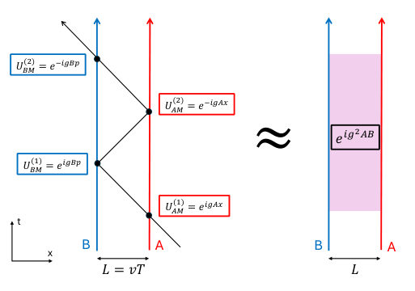
<figcaption class="paper-figure-caption"><b>Fig 1.</b> FIG. 1. Space-time diagram of a mediator interacting with systems A and B, giving rise to an interaction eig2AB ⊗1M. Systems A and B are separated by distance L. The mediator travels at speed v, hence takes time T = L/v to go from one system to the other. While the mediator trajectory is well defined in space-time, the effective interaction arises after the mediator has finished all its interactions and cannot be localized exactly in space-time.</figcaption>
</figure>
<figure class="paper-figure-card">
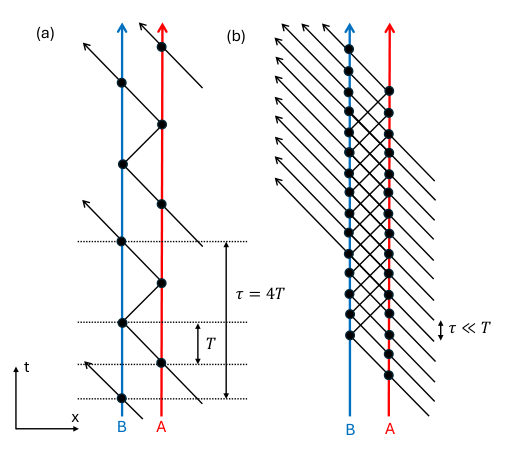
<figcaption class="paper-figure-caption"><b>Fig 2.</b> FIG. 2. Space-time diagrams of mediators (in black) contin- uously interacting with systems A (red) and B (blue). The interactions of the mediators with the A and B systems are shown by black dots. The mediators take time T to travel from A to B (or back). A new mediator arrives every τ. In panel (a) τ = 4T while in panel (b) τ ≪T. In the limit τ →0 we obtain the continuous field model. Both models give rise to an effective interaction Hamiltonian Heff AB.</figcaption>
</figure>
<figure class="paper-figure-card">
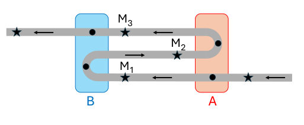
<figcaption class="paper-figure-caption"><b>Fig 3.</b> FIG. 3. Spatial arrangement of systems A (red) and B (blue) and the mediators (stars), used to illustrate dressed states. The mediators arrive at a rate 1/τ = 1/T, ensuring that the mediator configuration repeats every T.</figcaption>
</figure>
<figure class="paper-figure-card">
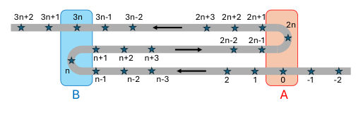
<figcaption class="paper-figure-caption"><b>Fig 4.</b> FIG. 4. Spatial arrangement of systems A (red) and B (blue) and the mediator modes (stars). There are n modes between A and B. In one elementary time step the modes hop forward by one position, and those at positions 0, n, 2n, and 3n interact with A or B.</figcaption>
</figure>
<figure class="paper-figure-card">
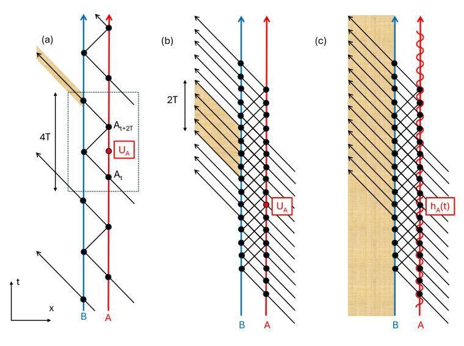
<figcaption class="paper-figure-caption"><b>Fig 5.</b> FIG. 5. Local control resolves the mediator dynamics. (a) In a discrete loop, arbitrary evolution of Alice’s coupling observable between the two encounters is captured by the mismatch ∆A = At+2T −At; sudden gates and slowly varying control are two limits of the same expression. (b) For a continuous mediator flux, an instantaneous gate is exactly tractable and emits a disturbed pulse of duration 2T. (c) The most general setting combines a continuous mediator field with continuous local control hA(t). In this case, a continuous flux of disturbed mediators is emitted. Its detailed analysis is left open.</figcaption>
</figure>
</div>

<p><strong>Summary.</strong> This theoretical paper investigates the inconsistencies arising from treating quantum interactions as instantaneous, nonlocal Hamiltonians. It resolves these paradoxes by modeling the interaction through a physical mediator field that respects the speed of light. The methodology involves time-averaging and perturbation theory to show how residual mediator effects cause decoherence and correct the effective dynamics.</p>
<p><strong>Why it may be interesting.</strong> This work is highly relevant to AMO physics and quantum optics as it provides a rigorous framework for deriving effective Hamiltonians from underlying local, causal interactions mediated by quantum fields, addressing fundamental issues of locality and information transfer.</p>
<details>
<summary>Detailed structure</summary>
<p><strong>Main problem.</strong> The paper addresses the paradoxes arising when modeling interactions between remote quantum systems using an effective, nonlocal Hamiltonian that violates fundamental principles like locality and finite propagation speed.</p>
<p><strong>Main result.</strong> The paradoxes are resolved by embedding the interaction into a microscopic mediator model that explicitly respects the light cone and finite mediator flight time, leading to measurable residual effects and decoherence.</p>
<p><strong>Method.</strong> The analysis employs time-averaging (coarse-graining) over the mediator flight time and utilizes perturbative expansions in the coupling strength to derive effective Hamiltonians and master equations.</p>
<p><strong>Model / system.</strong> The system consists of two remote quantum systems (A and B) coupled via a microscopic mediator (M), which can be modeled as a bosonic field in a waveguide or through successive local unitary transformations.</p>
<p><strong>Key observables.</strong> Faster-than-light communication signatures, local energy cost/work, purity ($  ext{Tr}(ar{
ho}(t)^2)$), and decoherence rates.</p>
<p><strong>Important parameters / regimes.</strong> Mediator flight time ($T$), local coupling strength ($g$), and the effective coupling constant ($\mu$).</p>
<p><strong>Assumptions / limitations.</strong> The analysis relies on deriving effective descriptions by tracing out the mediator field, assuming the mediator respects causality (light cone), and using approximations like the continuum limit.</p>
<p><strong>Figures summary.</strong> Not specified by the notes, but the analysis involves deriving time-averaged density matrices and examining state evolution under local gates.</p>
<p><strong>Paper structure.</strong> The paper progresses from identifying the paradoxes of nonlocal Hamiltonians to constructing microscopic, causal mediator models. It then analyzes the resulting dynamics using time averaging and perturbative expansions, culminating in discussions of decoherence and state-dependent evolution.</p>
</details>
<details>
<summary>Abstract</summary>
<p>In quantum physics it is commonplace to model the interaction of remote systems with a many-body Hamiltonian. Taking such an action-at-a-distance description {\it à la lettre} leads to various paradoxes related to faster-than-light communication and apparent inconsistencies in local energy accounting. It also neglects residual effects, such as entanglement between the remote systems and the mediator that implements the interaction, or the decoherence that arises when the remote systems undergo local evolution. We study simple microscopic quantum models that respect the light cone by design and reproduce two-body Hamiltonians. For these models we quantitatively analyze the residual effects of the microscopic mediator on the remote systems, including dressing of stationary states, and decoherence in the presence of fast local control. We show how the models resolve the paradoxes.</p>
</details>
<p><sub><a href="#top">↑ back to top</a></sub></p>

<p><a id="paper-2609.11508"></a></p>
<h3 id="joint-mitigation-of-algorithmic-and-physical-errors-in-noisy-hamiltonian-simulation"><a href="http://arxiv.org/abs/2609.11508v1">Joint Mitigation of Algorithmic and Physical Errors in Noisy Hamiltonian Simulation</a></h3>
<p><strong>Authors:</strong> Shuo Zhou, Xinzhao Wang, Ruiqi Zhang, Xiaoyang Wang, Yi-Cong Zheng, Tongang Li, Shengyu Zhang<br>
<strong>Type:</strong> both · <strong>Category:</strong> quantum information and computing · <strong>PDF:</strong> <a href="https://arxiv.org/pdf/2609.11508v1">https://arxiv.org/pdf/2609.11508v1</a><br>
<strong>Analysis basis:</strong> full PDF text, analyzed in chunks
<strong>Topic relevance:</strong> <code>QC/QI experiment</code> <strong>3/5</strong> · <code>methods for driven-dissipative</code> <strong>3/5</strong> · <code>analog quantum simulation</code> <strong>2/5</strong> · <code>correlated / nonlocal dissipation</code> <strong>2/5</strong> · <code>driven-dissipative phase transition</code> <strong>2/5</strong> · <code>Keldysh / 2PI / non-Gaussian methods</code> <strong>1/5</strong> · <code>non-equilibrium universality</code> <strong>1/5</strong> · <code>quantum measurements</code> <strong>1/5</strong></p>
<div class="figure-strip-hint">↔ Scroll figures horizontally</div>
<div class="paper-figures-scroll">
<figure class="paper-figure-card">
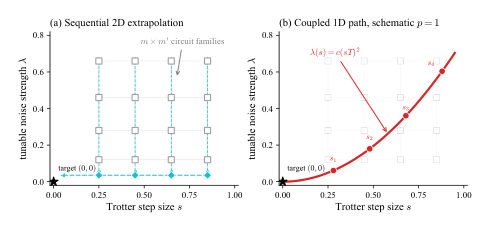
<figcaption class="paper-figure-caption"><b>Fig 1.</b> FIG. 1. Coupled extrapolation path as a one-dimensional replacement for a two-dimensional Richardson grid. The hor- izontal coordinate s is the Trotter step size, the vertical co- ordinate λ is a tunable physical-noise strength, and the black star marks the ideal target limit (s, λ) = (0, 0). (a) A conven- tional two-axis construction samples an m × m′ rectangular grid, where m and m′ denote the Richardson node counts along the step-size and noise-strength axes: one first extrap- olates each fixed-s column to zero noise, shown by the cyan diamonds, and then extrapolates those zero-noise estimates toward s = 0. (b) The coupled construction instead sam- ples only m paired Richardson nodes on...</figcaption>
</figure>
<figure class="paper-figure-card">
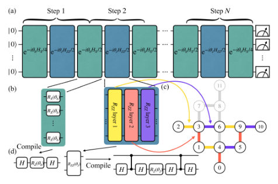
<figcaption class="paper-figure-caption"><b>Fig 2.</b> FIG. 2. Hardware implementation of Trotterized Ising dy- namics. (a) A second-order symmetric (p = 2) Trotter step al- ternates transverse-field rotations and Ising interactions. (b) The interaction layer is scheduled in three parallel RZZ pat- terns containing non-overlapping qubit pairs. (c) Colored edges identify these patterns on the connected 9-qubit sub- graph. (d) The logical rotations are compiled into the device gate set {H, RZ, CZ}: RX(θ) = HRZ(θ)H, whereas RZZ uses fixed Clifford basis changes, controlled-Z entanglers and an angle-dependent RZ rotation.</figcaption>
</figure>
<figure class="paper-figure-card">
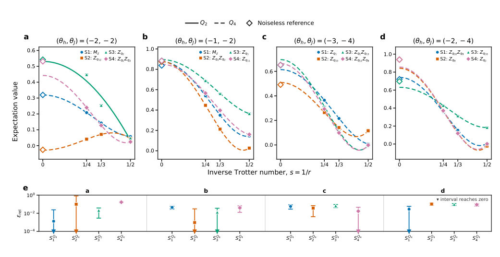
<figcaption class="paper-figure-caption"><b>Fig 3.</b> FIG. 3. Coupled one-dimensional extrapolation on quantum hardware. Hardware expectation values are shown at the paired nodes r = {4, 3, 2} and G = {1, 64/27, 8}, with colors distinguishing the observables. Solid curves show the quadratic least- squares model Q2, dashed curves show the quartic three-node Richardson interpolant Q4, and diamonds mark the noiseless references obtained by direct evolution of the same 9-qubit Hamiltonian and initial state. Panels (a)–(d) show (θh, θJ) = (−2, −2), (−1, −2), (−3, −4), (−2, −4), respectively. Main-panel points are averages of 12 measurement-batch means, and error bars denote their standard errors. Panel (e) shows the absolute relative intercept...</figcaption>
</figure>
<figure class="paper-figure-card">
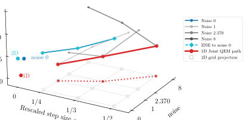
<figcaption class="paper-figure-caption"><b>Fig 4.</b> FIG. 4. Richardson extrapolation landscape obtained from sparse Pauli dynamics for the simulated 100-qubit open Ising chain. The observable is the average longitudinal mag- netization MZ = N −1 P</figcaption>
</figure>
</div>

<p><strong>Summary.</strong> This paper introduces a joint extrapolation strategy to overcome the limitations of noisy Hamiltonian simulation by simultaneously mitigating Trotterization error and physical hardware noise. By coupling the noise strength to the Trotter step size along a specific path, the authors enable error cancellation using a single Richardson extrapolation. This method achieves high accuracy with minimal overhead, validated on superconducting hardware and large-scale simulations.</p>
<p><strong>Why it may be interesting.</strong> This work provides a concrete, resource-efficient protocol for error mitigation that directly tackles the interplay between algorithmic limitations (Trotter error) and hardware imperfections (noise) in open quantum system simulations.</p>
<details>
<summary>Detailed structure</summary>
<p><strong>Main problem.</strong> The paper addresses the challenge of accurately simulating quantum dynamics using product-formula Hamiltonian simulation on near-term quantum hardware, where two competing errors—Trotterization bias and physical hardware noise—limit accuracy.</p>
<p><strong>Main result.</strong> The authors propose a novel one-dimensional joint extrapolation strategy that couples the noise strength to the Trotter step size, allowing both leading error terms to be canceled simultaneously with a single Richardson extrapolation.</p>
<p><strong>Method.</strong> The core method involves defining a calibrated path $\lambda(s) = c(sT)^{p+1}$ and applying Richardson extrapolation along this path to estimate the true zero-noise, zero-step-size limit.</p>
<p><strong>Model / system.</strong> The simulation focuses on Hamiltonian dynamics, specifically using the transverse-field Ising Hamiltonian, implemented on superconducting quantum computers and simulated for 100-qubit Sparse Pauli Dynamics (SPD). Noise is modeled by local Lindbladian noise.</p>
<p><strong>Key observables.</strong> Average longitudinal magnetization ($\langle M_Z 
angle$) and the extrapolated value at the joint zero-noise, zero-step-size limit.</p>
<p><strong>Important parameters / regimes.</strong> Trotter step size ($s$), total evolution time ($T$), tunable noise strength ($\lambda$), and the order of the product formula ($p$).</p>
<p><strong>Assumptions / limitations.</strong> The protocol assumes that the required noise strengths for the optimal path lie above the intrinsic device-noise floor, and theoretical guarantees rely on finite-order Baker–Campbell–Hausdorff bounds.</p>
<p><strong>Figures summary.</strong> Figures illustrate the comparison between conventional 2D extrapolation grids and the proposed 1D coupled path, showing error reduction towards the exact noiseless reference.</p>
<p><strong>Paper structure.</strong> The paper introduces the joint error mitigation problem, develops the coupled 1D extrapolation path theory, provides a provable resource guarantee, and validates the protocol through both superconducting quantum hardware experiments and large-scale 100-qubit classical simulations using SPD.</p>
</details>
<details>
<summary>Abstract</summary>
<p>Product-formula Hamiltonian simulation is naturally suited to near-term quantum processors, but its accuracy is set by two competing errors: finite-step Trotter bias and physical hardware noise. We introduce a joint extrapolation strategy that ties the tunable per-layer noise strength to the Trotter step size, $λ(s)=c(sT)^{p+1}$ for a $p$-th order product formula. Along this one-dimensional path, the leading physical-noise and Trotter corrections over the full evolution both enter at order $s^p$ and can be canceled by a single Richardson extrapolation. Building on a previously established finite-order Baker--Campbell--Hausdorff truncation bound, we derive a provably commutator-scaling resource guarantee for the joint extrapolation. For local Hamiltonians with local Lindbladian noise, the protocol mitigates physical noise together with Trotter error with only a constant asymptotic overhead relative to noiseless Trotter extrapolation, provided the required noise strengths lie above the intrinsic device-noise floor. We experimentally demonstrate the protocol for Ising dynamics on a superconducting quantum computer using learned noise amplification. Complementary 100-qubit Sparse Pauli Dynamics (SPD) simulations achieve comparable accuracy to two-dimensional Richardson extrapolation with fewer circuit settings.</p>
</details>
<p><sub><a href="#top">↑ back to top</a></sub></p>

<p><a id="paper-2609.11473"></a></p>
<h3 id="work-as-a-function-of-protocol-duration-for-the-efficient-erasure-of-an-underdamped-memory-isothermal-to-adiabatic-transition"><a href="http://arxiv.org/abs/2609.11473v1">Work as a function of protocol duration for the efficient erasure of an underdamped memory: isothermal to adiabatic transition</a></h3>
<p><strong>Authors:</strong> Nicolas Barros, Stephen Whitelam, Sergio Ciliberto, Ludovic Bellon<br>
<strong>Type:</strong> both · <strong>Category:</strong> statistical mechanics · <strong>PDF:</strong> <a href="https://arxiv.org/pdf/2609.11473v1">https://arxiv.org/pdf/2609.11473v1</a><br>
<strong>Analysis basis:</strong> full PDF text, analyzed in chunks
<strong>Topic relevance:</strong> <code>driven-dissipative phase transition</code> <strong>3/5</strong> · <code>non-equilibrium universality</code> <strong>3/5</strong> · <code>quantum measurements</code> <strong>3/5</strong> · <code>methods for driven-dissipative</code> <strong>2/5</strong> · <code>scars &amp; prethermalization</code> <strong>2/5</strong> · <code>Frenkel-Kontorova</code> <strong>1/5</strong> · <code>Keldysh / 2PI / non-Gaussian methods</code> <strong>1/5</strong></p>
<div class="figure-strip-hint">↔ Scroll figures horizontally</div>
<div class="paper-figures-scroll">
<figure class="paper-figure-card">
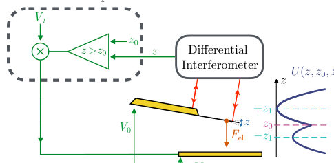
<figcaption class="paper-figure-caption"><b>Fig 1.</b> FIG. 1. Experimental setup: a conductive cantilever experi- ences an electrostatic force Fel due to the voltage difference V −V0 with a facing electrode. The deflection z of the can- tilever, measured by interferometry, is compared to a thresh- old z0 by the feedback loop, setting V = ±V1 ≪V0. This results in a tunable double-well potential U(z, z0, z1) [34, 35]. For a symmetric potential (z0 = 0), logical states 0 and 1 are assigned to values z &lt; 0 and z &gt; 0, respectively.</figcaption>
</figure>
<figure class="paper-figure-card">
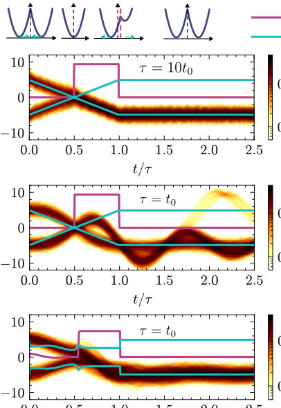
<figcaption class="paper-figure-caption"><b>Fig 2.</b> FIG. 2. a) Basic erasure protocol for a cantilever evolving in a bi-quadratic double well [9]. The initial symmetric double- well potential, with an energetic barrier of 12.5 kBT, encodes a bit of information through the position of the cantilever: 0 if z &lt; 0, 1 otherwise. In a first stage (0 &lt; t &lt; τ/2), the two wells are merged symmetrically, and the information is lost as the cantilever starts jumping between the two states. Then, a translation stage (τ/2 &lt; t &lt; τ) returns the centers of the wells ±z1 to their original position. This time however, the potential is asymmetric, and a high energetic barrier pre- vents any transition during the translation. Finally, the initial potential is...</figcaption>
</figure>
<figure class="paper-figure-card">
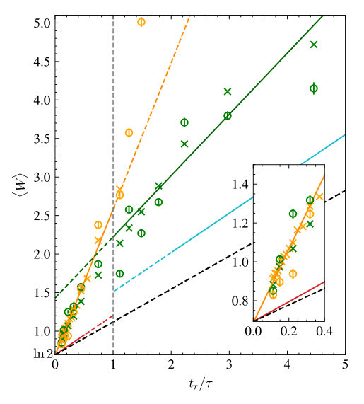
<figcaption class="paper-figure-caption"><b>Fig 3.</b> FIG. 3. Underdamped regime - Mean work associated to erasure using the basic and learned protocols as a function of tr/τ. We use simulations (×) and ∼2000 experimental trajectories (◦, with error bars) sampling equally all transi- tions. We represent a linear fit of the basic protocol for long erasures (τ &gt; tr, orange line, fit on simulation data), and of the learned protocol for fast erasures (τ &lt; tr, green line, fit on simulation data); each fit is extrapolated beyond its range of validity (dashed). The linear fit for τ &lt; tr presents a large uncertainty on its parameters, due to the large dispersion of the points on the small time range available, and is intended as a guide to the eye....</figcaption>
</figure>
<figure class="paper-figure-card">
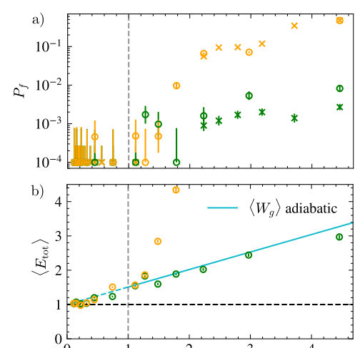
<figcaption class="paper-figure-caption"><b>Fig 4.</b> FIG. 4. Underdamped regime - a) Failure rate Pf as a function of tr/τ for the single erasure of the learned and the basic protocols. For both protocols Pf &lt; 10−3 for τ ≫tr, but the Pf of the basic protocol rapidly increases for shorter τ. b) Mean total energy ⟨Etot⟩at the end of the erasure protocol (t = τ) as a function of tr/τ. Slower protocols are able to release the accumulated energy as heat during the erasure, and operate isothermally, close to the internal total energy prescribed by the equipartition theorem at equilibrium ⟨Etot⟩= kBT. In contrast, fast erasure lead to an increased accumulated total energy. For the basic protocol, the transition between the two regimes appears close...</figcaption>
</figure>
<figure class="paper-figure-card">
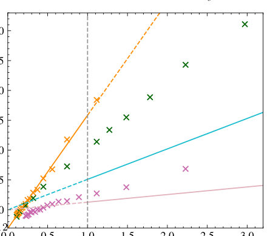
<figcaption class="paper-figure-caption"><b>Fig 5.</b> FIG. 5. Underdamped regime - Mean work associated to era- sure as a function of tr/τ, using the basic (orange) and learned (green) protocols computed at Q = 7 as in the main text, and a learned protocol at Q = 14 (magenta). The mean work al- ways lies above the lower bounds predicted by Eq. 9 at Q = 7 (light blue line) and Q = 14 (pink line). The vertical dashed line marks τ = tr, common to both quality factors in these rescaled time units.</figcaption>
</figure>
</div>

<p><strong>Summary.</strong> This paper investigates the minimum work needed to erase a bit stored in an underdamped mechanical memory by optimizing control protocols using reinforcement learning. It reveals distinct scaling laws depending on whether the erasure process is slow (isothermal) or fast (adiabatic). The findings demonstrate that optimized, non-equilibrium protocols can achieve efficiencies surpassing those predicted by protocols constrained by equilibrium boundary conditions.</p>
<p><strong>Why it may be interesting.</strong> This work directly addresses non-equilibrium thermodynamics and information erasure bounds in a mesoscopic mechanical system, providing experimental validation of theoretical scaling laws in the transition between slow and fast driving regimes.</p>
<details>
<summary>Detailed structure</summary>
<p><strong>Main problem.</strong> The study determines the minimum work required to efficiently erase a bit of information stored in an underdamped memory and analyzes how this work scales with the protocol duration ($\tau$).</p>
<p><strong>Main result.</strong> The work required exhibits distinct scaling regimes: quasi-static ($\tau \gg t_r$) approaches Landauer's bound plus a $1/\tau$ overhead, while fast erasures ($\tau \le t_r$) enter an adiabatic regime where learned protocols outperform equilibrium-based optimal protocols.</p>
<p><strong>Method.</strong> The research employs evolutionary reinforcement learning (neuroevolution) to optimize time-dependent control protocols, complemented by theoretical derivations of lower bounds using <em>gedanken</em> optimal protocols.</p>
<p><strong>Model / system.</strong> The physical system is an underdamped cantilever moving in a double-well potential, serving as an experimental model for a 1-bit memory. The dynamics are governed by the Langevin equation.</p>
<p><strong>Key observables.</strong> Mean work ($\langle W \rangle$), failure probability ($P_f$), and the system's total energy ($\langle E_{tot} \rangle$).</p>
<p><strong>Important parameters / regimes.</strong> Protocol duration ($\tau$), system relaxation time ($t_r$), and the ratio $\tau_r/\tau$ defining the transition between isothermal and adiabatic regimes.</p>
<p><strong>Assumptions / limitations.</strong> The analysis assumes control is limited to modulating two parameters ($z_0(t), z_1(t)$) and compares results against theoretical lower bounds derived from idealized protocols.</p>
<p><strong>Figures summary.</strong> Figures illustrate the comparison of mean work and failure rates for basic, learned, and optimal protocols across varying time scales ($\tau_r/\tau$), highlighting the performance gap for fast erasures.</p>
<p><strong>Paper structure.</strong> The paper progresses by establishing the physical model and the goal (minimum work), detailing the use of reinforcement learning for protocol optimization, analyzing the scaling laws across different time regimes (isothermal vs. adiabatic), and finally comparing learned results against theoretical lower bounds.</p>
</details>
<details>
<summary>Abstract</summary>
<p>We use evolutionary reinforcement learning to determine efficient time-dependent erasure protocols for an underdamped cantilever moving in a double-well potential, an experimental realization of a 1-bit memory. We investigate how the mean work $\langle W \rangle $ needed to erase a bit scales as a function of the protocol duration $τ$. We find two regimes, depending on how $τ$ compares to the relaxation time of the system $t_r$. For $τ\gg t_r$, the quasistatic isothermal regime, we recover Landauer's bound plus an overhead that scales as $1/τ$, similar to the overdamped case. By contrast, for $τ<t_r$ erasure becomes adiabatic and $\langle W \rangle$ grows more slowly than in the isothermal case. This growth is bounded from below as $1/τ$, which we derive using a gedanken optimal protocol. Finally, comparison with overdamped erasure shows that learned protocols can outperform protocols that are optimal subject to equilibrium boundary conditions.</p>
</details>
<p><sub><a href="#top">↑ back to top</a></sub></p>

<p><a id="paper-2609.10697"></a></p>
<h3 id="differential-and-common-decoherence-modes-in-witnessing-the-quantum-gravity-induced-entanglement-of-matter"><a href="http://arxiv.org/abs/2609.10697v1">Differential and Common Decoherence Modes in Witnessing the Quantum Gravity-Induced Entanglement of Matter</a></h3>
<p><strong>Authors:</strong> Ryan Rizaldy, Helen M Sheehy, Tian Zhou, Anupam Mazumdar<br>
<strong>Type:</strong> theory · <strong>Category:</strong> other · <strong>PDF:</strong> <a href="https://arxiv.org/pdf/2609.10697v1">https://arxiv.org/pdf/2609.10697v1</a><br>
<strong>Analysis basis:</strong> full PDF text, analyzed in chunks
<strong>Topic relevance:</strong> <code>correlated / nonlocal dissipation</code> <strong>3/5</strong> · <code>driven-dissipative phase transition</code> <strong>2/5</strong> · <code>interference shaping light</code> <strong>2/5</strong> · <code>methods for driven-dissipative</code> <strong>2/5</strong> · <code>quantum measurements</code> <strong>2/5</strong> · <code>Keldysh / 2PI / non-Gaussian methods</code> <strong>1/5</strong> · <code>analog quantum simulation</code> <strong>1/5</strong> · <code>non-equilibrium universality</code> <strong>1/5</strong></p>
<div class="figure-strip-hint">↔ Scroll figures horizontally</div>
<div class="paper-figures-scroll">
<figure class="paper-figure-card">
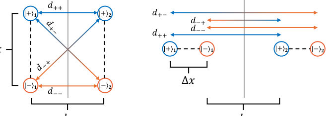
<figcaption class="paper-figure-caption"><b>Fig 1.</b> Figure 1. (a)Parallel [42] and (b) linear setup [2] of two test masses in spatial superpositions (1) and (2). The superposition sizes are assumed to be the same for both cases, ∆x. We assume the internal spin states are split into |+⟩and |−⟩states. The spin-dependent Stern-Gerlach force creates the macroscopic spatial quantum superposition. The matter-wave interferometers are separated by a divider, shown here as a vertical line, which serves as an electromagnetic shield. The shield is treated classically here. The details can be found in QGEM references; see [14, 16].</figcaption>
</figure>
<figure class="paper-figure-card">
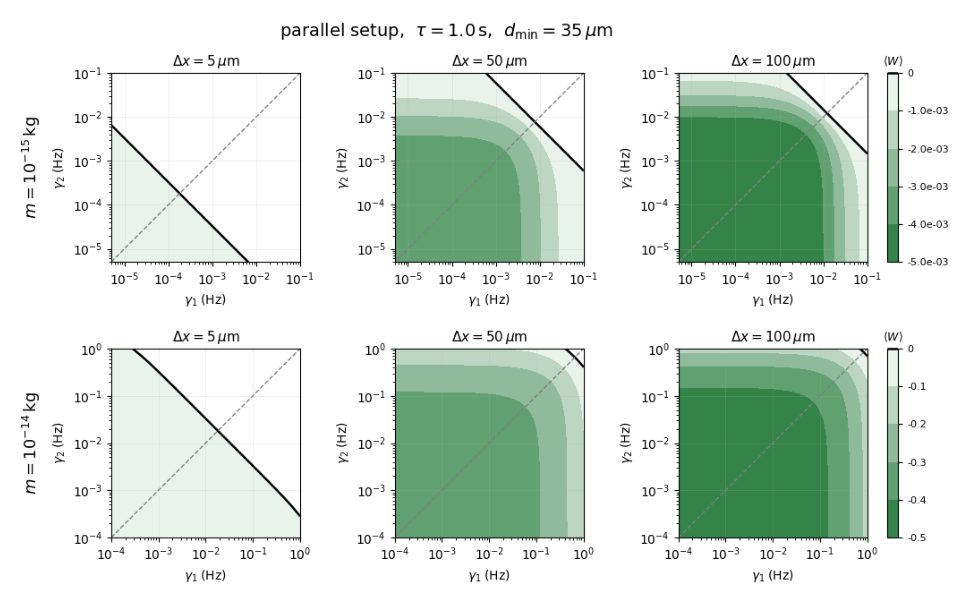
<figcaption class="paper-figure-caption"><b>Fig 2.</b> Figure 2. Parameter scan for the parallel 2-qubit configuration for τ = 1 s and dmin = 35 µm, for the superposition sizes ∆x = 5, 50, 100 µm as a function of γ1, γ2. The colour gradients show the PPT witness ⟨W⟩&lt; 0 for the two qubits to get entangled solely via the quantum gravitational interaction (by a virtual graviton exchange); the black line demarcates the region where ⟨W⟩= 0. The white region shows no detection of entanglement under the PPT criteria for witnessing entanglement. We select dmin = 35µm, which is based on the analysis that gravity between the two interferometers will dominate over Casimir, electric and magnetic dipole interactions between the nanoparticle and the...</figcaption>
</figure>
<figure class="paper-figure-card">
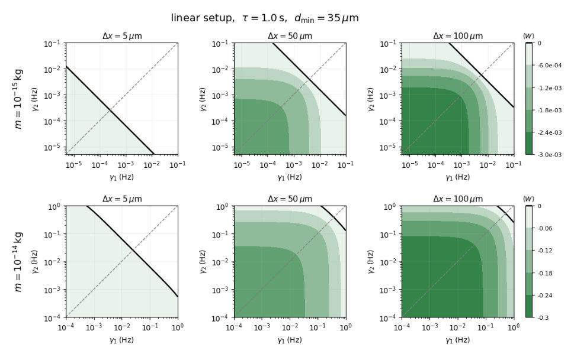
<figcaption class="paper-figure-caption"><b>Fig 3.</b> Figure 3. Parameter scan for the linear 2-qubit configuration for τ = 1 s and dmin = 35 µm, for the superposition sizes ∆x = 5, 50, 100 µm as a function of γ1, γ2. The colour gradients show the PPT witness ⟨W⟩&lt; 0 for the two qubits to get entangled solely via the quantum gravitational interaction (by a virtual graviton exchange); the black line demarcates the region where ⟨W⟩= 0. The dashed line shows γ1 = γ2. The white region shows no detection of entanglement under the PPT criteria for witnessing entanglement. We consider two different masses as shown above. We select dmin = 35µm, which is based on the analysis that gravity between the two interferometers will dominate over Casimir,...</figcaption>
</figure>
<figure class="paper-figure-card">
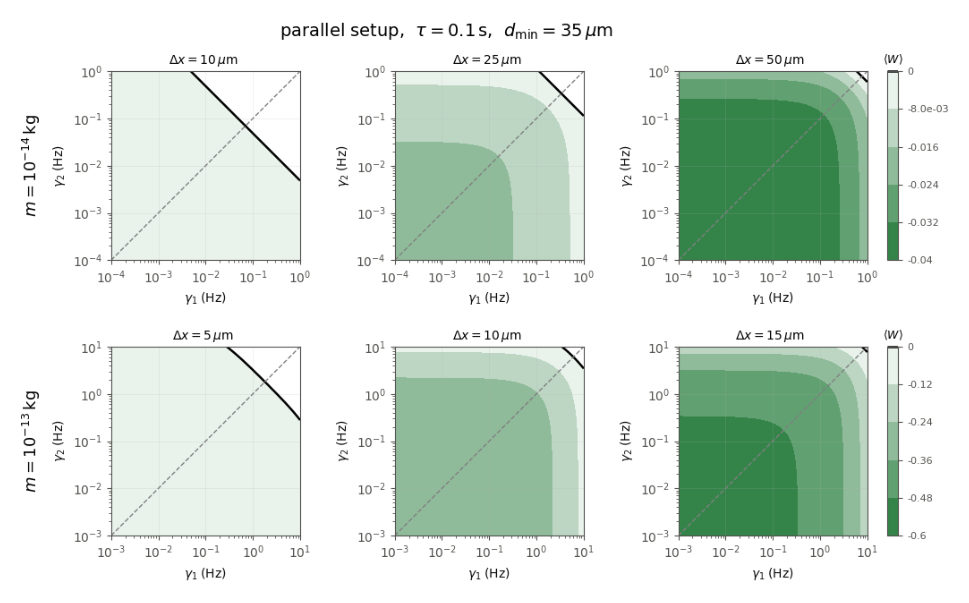
<figcaption class="paper-figure-caption"><b>Fig 4.</b> Figure 4. Parameter scan for the parallel 2-qubit configuration for time τ = 0.1s, with dmin = 35 µm, for the superposition sizes ∆x = 10, 25, 50 µm for m = 10−14 kg and ∆x = 5, 10, 15 µm for m = 10−13 kg with respect to different values of γ1, γ2. The colour gradients show the PPT witness ⟨W⟩&lt; 0 for the two qubits to get entangled solely via the quantum gravitational interaction (by a virtual graviton exchange); the black line demarcates the region where ⟨W⟩= 0. The dashed line shows γ1 = γ2. The colour gradients show the PPT witness ⟨W⟩&lt; 0 for the two qubits to get entangled solely via the quantum gravitational interaction (by a virtual graviton exchange); the black line demarcates the...</figcaption>
</figure>
<figure class="paper-figure-card">
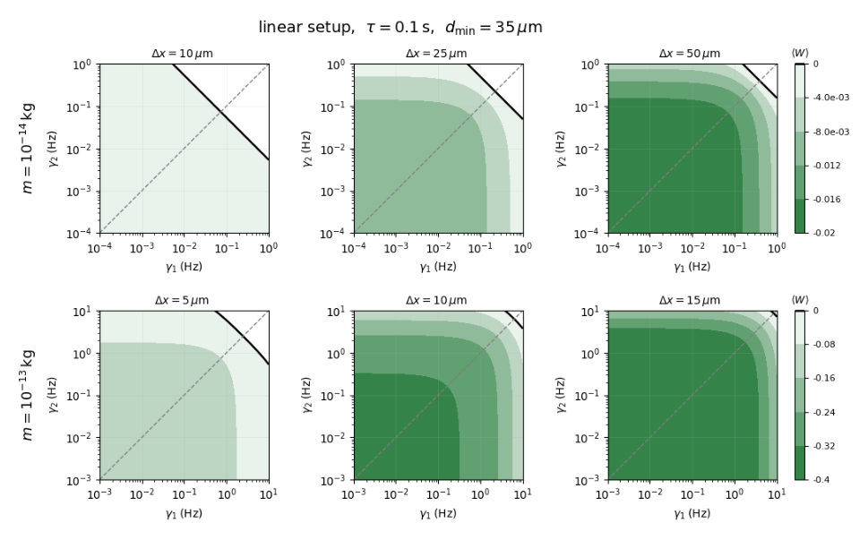
<figcaption class="paper-figure-caption"><b>Fig 5.</b> Figure 5. Parameter scan for the linear 2-qubit configuration at τ = 0.1 s and dmin = 35 µ m, for the superposition sizes ∆x = 10, 25, 50 µm for m = 10−14 kg and ∆x = 5, 10, 15 µm for m = 10−13 kg with respect to different values of γ1, γ2. We consider two different masses as shown above. The colour gradients show the PPT witness ⟨W⟩&lt; 0 for the two qubits to get entangled solely via the quantum gravitational interaction (by a virtual graviton exchange); the black line demarcates the region where ⟨W⟩= 0. The white region shows no detection of entanglement under the PPT criteria for witnessing entanglement. The dashed line shows γ1 = γ2. We select dmin = 35µm, which is similar to the earlier...</figcaption>
</figure>
</div>

<p><strong>Summary.</strong> This theoretical paper develops a framework to detect entanglement generated between two matter-wave interferometers via hypothesized quantum gravity interactions. It uses the entanglement witness derived from the partial transpose criterion, showing that the detectability of this entanglement is highly dependent on the mass of the test particles and the management of environmental decoherence. The results suggest that increasing the mass is crucial for achieving a measurable signal.</p>
<p><strong>Why it may be interesting.</strong> This work is highly relevant to AMO physics as it applies advanced open quantum system techniques (decoherence modeling, entanglement witnesses) to a cutting-edge, fundamental experiment involving matter-wave interferometry and quantum gravity effects.</p>
<details>
<summary>Detailed structure</summary>
<p><strong>Main problem.</strong> The paper addresses the theoretical challenge of detecting entanglement generated between two matter-wave interferometers due to hypothesized quantum gravitational interactions.</p>
<p><strong>Main result.</strong> The entanglement witness, derived from the Positive Partial Transpose (PPT) criterion, is shown to be sensitive to the mass of the interferometers and the decoherence rates, suggesting that increasing mass significantly improves detectability.</p>
<p><strong>Method.</strong> The analysis employs quantum information theory tools, specifically calculating the eigenvalues of the partial transpose of the density matrix ($
ho^{T2}$) to quantify entanglement.</p>
<p><strong>Model / system.</strong> The system consists of two adjacent matter-wave interferometers (e.g., using nanodiamonds) whose interaction is mediated solely by gravity. The evolution is treated as an open quantum system subject to global and differential decoherence rates.</p>
<p><strong>Key observables.</strong> The entanglement witness $\langle W 
angle$ (negative value indicates entanglement) and the entanglement phase $\phi_{ent}$.</p>
<p><strong>Important parameters / regimes.</strong> Interaction time $  au$ (e.g., 0.1 s to 1 s), matter-wave mass $m$ (e.g., $10^{-14}$ kg to $10^{-13}$ kg), and common/differential decoherence rates ($\Gamma_c, \Gamma_d$).</p>
<p><strong>Assumptions / limitations.</strong> The analysis assumes the density matrix can be factored into unitary (phase) and decoherence parts, and it models decoherence using effective common and differential rates.</p>
<p><strong>Figures summary.</strong> Figures illustrate the physical setups (parallel and linear configurations) and show parameter scans of the entanglement witness $\langle W 
angle$ as a function of decoherence rates ($\gamma_1, \gamma_2$).</p>
<p><strong>Paper structure.</strong> The paper builds from defining the physical setup and the entanglement witness criterion, to deriving the density matrix evolution under decoherence, and finally calculating the eigenvalues of the partial transpose to determine the conditions for entanglement detection.</p>
</details>
<details>
<summary>Abstract</summary>
<p>In the context of the QGEM (Quantum Gravity-induced Entanglement of Masses) experiment, we consider two adjacent matter-wave interferometers in linear and parallel configurations that interact solely via gravity. If gravity were quantum, then the two matter-wave interferometers would become entangled via the virtual excitation of the massless graviton. In this paper, we consider witnessing this entanglement by considering a generic experimental scenario where the two interferometers are subject to different global phases and different decoherence rates. In this context, we show that the individual global phases do not affect the witness, discuss common and differential decoherence modes, and perform the parameter search optimal for different masses. We provide a mathematical framework for these asymmetric decoherence rates and then search for parameters that determine the entanglement witness. We have kept the inter-separation distance between the two closest superpositions of the interferometers' masses fixed while varying the experimental time from $τ=0.1$ s to $τ=1$ s. Finishing the experiment at $ τ=0.1$ s has many advantages from the point of view of protecting the experiment from random acceleration noise. However, witnessing the entanglement also suffers from $\langle W\rangle \sim -{\cal O}(10^{-2})$ for $m=10^{-14}$~kg, for decoherence rate in the ranges of ${\cal O}(10^{-1}-1)$~Hz for $τ=0.1$ s experiment. However, as we show, increasing the mass of the matter-wave interferometer may improve the witness considerably.</p>
</details>
<p><sub><a href="#top">↑ back to top</a></sub></p>

<p><a id="paper-2609.11333"></a></p>
<h3 id="quantum-random-access-memory-implementation-using-photon-photon-interaction-in-rydberg-atomic-ensemble"><a href="http://arxiv.org/abs/2609.11333v1">Quantum Random Access Memory Implementation Using Photon-Photon Interaction in Rydberg Atomic Ensemble</a></h3>
<p><strong>Authors:</strong> Avirup Chakraborty, Shrabana Chakrabarti<br>
<strong>Type:</strong> theory · <strong>Category:</strong> quantum information and computing · <strong>PDF:</strong> <a href="https://arxiv.org/pdf/2609.11333v1">https://arxiv.org/pdf/2609.11333v1</a><br>
<strong>Analysis basis:</strong> full PDF text, analyzed in chunks
<strong>Topic relevance:</strong> <code>Rydberg arrays</code> <strong>3/5</strong> · <code>analog quantum simulation</code> <strong>3/5</strong> · <code>Tavis-Cummings &amp; cavity-many-emitter</code> <strong>2/5</strong> · <code>methods for driven-dissipative</code> <strong>2/5</strong> · <code>Keldysh / 2PI / non-Gaussian methods</code> <strong>1/5</strong> · <code>driven-dissipative phase transition</code> <strong>1/5</strong> · <code>interference shaping light</code> <strong>1/5</strong> · <code>quantum measurements</code> <strong>1/5</strong></p>
<div class="figure-strip-hint">↔ Scroll figures horizontally</div>
<div class="paper-figures-scroll">
<figure class="paper-figure-card">
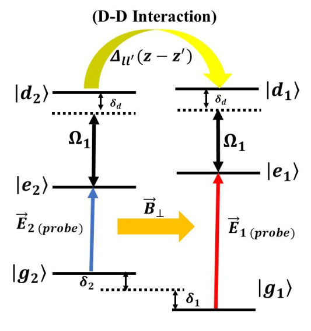
<figcaption class="paper-figure-caption"><b>Fig 1.</b> FIG. 1. Double-ladder Electromagnetically Induced Transparency (EIT) scheme utilized within the Rydberg atomic ensemble.</figcaption>
</figure>
<figure class="paper-figure-card">
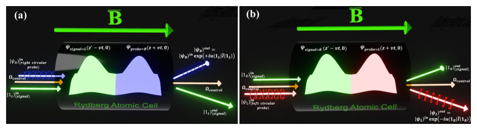
<figcaption class="paper-figure-caption"><b>Fig 2.</b> FIG. 2. Routing operator’s physical operation inside the Rydberg cell, showing interactions between counterpropagating weak ingle-photon ”signal” and coherent ”walker” probe pulses centred at t = 0 around z = 0 and z = L. (a) and (b) show left ( |ψL⟩ ) and right (|ψR⟩) circularly polarized probes interacting with oppositely polarized signals, acquiring distinct linear (Zeeman shift) and nonlinear (D-D interaction) phases for routing.</figcaption>
</figure>
<figure class="paper-figure-card">
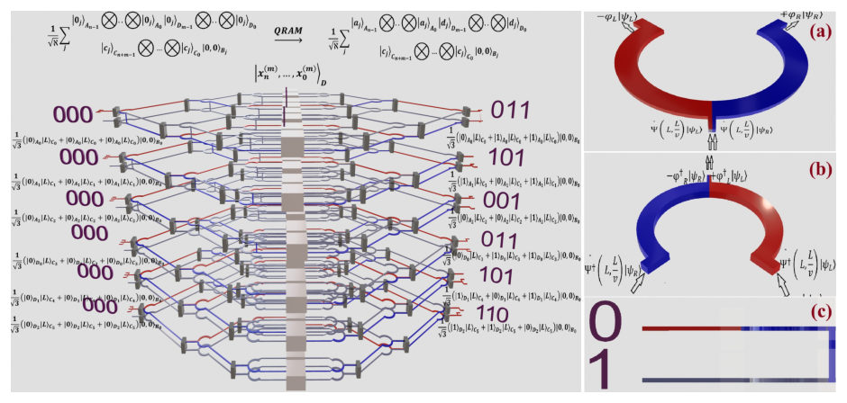
<figcaption class="paper-figure-caption"><b>Fig 3.</b> FIG. 3. Depicting the Quantum Random Walk-based qRAM architecture, n+m walkers traverse parallelized binary tree layers of interconnected phase-dependent waveguides, accessing memory addresses via double-rail encoding. (a) Routing operator Ψ exploits phase differences, steering left-polarized ( |L⟩) and right-polarized ( |R⟩) walkers into red and blue phase-selective waveguides. (b) Inverse operator Ψ† enables deterministic retrieval. (c) The dual-rail signal mechanism.</figcaption>
</figure>
<figure class="paper-figure-card">
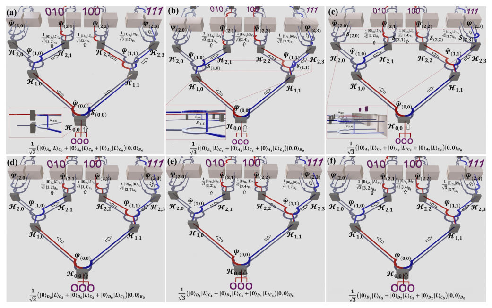
<figcaption class="paper-figure-caption"><b>Fig 4.</b> FIG. 4. Maps transportation of the probe walkers navigating the binary tree from root (0, 0) to distinct memory locations (010, 100, 111). Input in left circular polarization |L⟩, walkers at node (w, l) are manipulated by modified Hadamard H(w, l) and routing Ψ(w, l) operators to steer superpositions. Shift operator S(w, l) concurrently encodes the address qubit. Panels (a)(c) and (d)-(f) show routing of address |0⟩A2 ⊗|0⟩A1 ⊗|0⟩A0 and data |0⟩D2 ⊗|0⟩D1 ⊗|0⟩D0 walkers, respectively. (Left (Right) circular polarization state probe |L⟩carrying waveguide color-coded as red (blue)).</figcaption>
</figure>
<figure class="paper-figure-card">
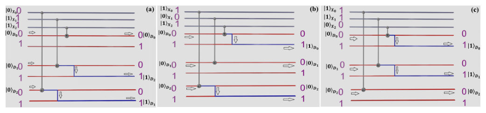
<figcaption class="paper-figure-caption"><b>Fig 5.</b> FIG. 5. Details the qRAM querying phase using dual-rail CNOT operations. Target memory information acts as control bits x0, x1, and x2, modifying data walkers D0, D1, and D2 stored in waveguides (|L⟩). Successive CNOT gates copy target data superpositions. Panels (a)-(c) show quantum querying from locations (010), (100), (111), respectively.</figcaption>
</figure>
</div>

<p><strong>Summary.</strong> This paper proposes a scalable Quantum Random Access Memory (qRAM) architecture by implementing quantum random walks using a Rydberg atomic ensemble in a cavity QED setup. It overcomes the decoherence and scalability issues of prior designs by encoding information into polarization-dependent phase shifts. The resulting framework achieves an optimal time complexity of O(n log(n+m)), providing a practical hardware pathway for quantum computation.</p>
<p><strong>Why it may be interesting.</strong> This work is highly relevant to AMO physics because it leverages complex, controllable quantum phenomena—specifically Rydberg interactions and EIT—to solve a fundamental problem in quantum computation (qRAM scalability). The coupling of quantum optics to quantum information theory is a key area of overlap.</p>
<details>
<summary>Detailed structure</summary>
<p><strong>Main problem.</strong> The primary challenge addressed is overcoming the scalability limitations of Quantum Random Access Memory (qRAM) implementations, which suffer from decoherence in traditional gate-based or switch-based designs.</p>
<p><strong>Main result.</strong> The authors propose a scalable qRAM architecture achieving an optimal temporal complexity of O(n log(n+m)) by encoding quantum information into phase-encoded quantum walkers.</p>
<p><strong>Method.</strong> The methodology maps a discrete-time quantum walk onto a cavity QED framework, utilizing a robust routing operator derived from Rydberg interactions to steer polarization-dependent phase shifts.</p>
<p><strong>Model / system.</strong> The physical system is a Rydberg atomic ensemble within hollow-core waveguides, operating under an Electromagnetically Induced Transparency (EIT) scheme. The model involves deriving and solving equations for the Dark State Polariton (DSP) field propagation.</p>
<p><strong>Key observables.</strong> Opposite polarization-dependent phase shifts ($\pm \varphi$), cumulative transmission probabilities, and the overall time complexity $O(n \log(n+m))$ for $n$ addresses and $m$ data qubits.</p>
<p><strong>Important parameters / regimes.</strong> Strong control field regime ($|\Omega|^2 \gg \delta_{1,2}, \delta_d, \alpha$), and the ability to suppress spatial attenuation ($\kappa'_l$).</p>
<p><strong>Assumptions / limitations.</strong> The analysis relies on the strong control field regime to suppress spatial attenuation and uses approximations such as the adiabatic and second-order perturbation expansions.</p>
<p><strong>Figures summary.</strong> Figures illustrate the EIT double-ladder scheme, the physical operation of the polarization-dependent routing operator, and plots confirming attenuation suppression and information preservation across scaled memory depths.</p>
<p><strong>Paper structure.</strong> The paper develops the theory by first establishing the physical platform (Rydberg/EIT), deriving the necessary operators ($\hat{\Psi}, \hat{H}, \hat{S}$), and then recursively applying these operators to model the full cycle: encoding (writing), querying (CNOT), and decoding (retrieval) across binary tree layers.</p>
</details>
<details>
<summary>Abstract</summary>
<p>Quantum random access memory (qRAM) is crucial for overcoming data-loading bottlenecks in quantum machine learning; however, current physical implementations face severe scalability constraints. Traditional fanout designs demand exponential decoherence-prone gates, while bucket-brigade schemes require highly error-prone active switches. Motivated by these limitations, we propose a scalable qRAM architecture that fundamentally replaces active nodes with phase-encoded quantum walkers. Our methodology maps a discrete-time quantum walk onto a cavity quantum electrodynamics framework utilizing an electromagnetically induced transparency (EIT)-based Rydberg atomic ensemble. Inside hollow-core waveguides, strong Rydberg dipole-dipole interactions and a solenoidal magnetic field create a robust routing operator. This operator imparts precise, polarization-dependent phase shifts, steering circularly polarized probe pulses to target memory cells. Our results demonstrate that operating within a strong control field regime suppresses emergent spatial attenuation, ensuring cumulative transmission probabilities for highly scaled memory addresses. Ultimately, this parallelized architecture successfully optimizes spatial resources to static gates and temporal complexity to an optimal logarithmic scale of $\mathcal{O}(n\log(n+m))$ by requiring $\mathcal{O}(n+m)$ physical walkers, establishing a practical, fault-tolerant hardware pathway for advanced quantum computation implementations.</p>
</details>
<p><sub><a href="#top">↑ back to top</a></sub></p>

<p><a id="paper-2609.11522"></a></p>
<h3 id="birth-and-death-of-entanglement-in-hamiltonian-driven-quantum-games-under-decoherence"><a href="http://arxiv.org/abs/2609.11522v1">Birth and Death of Entanglement in Hamiltonian-Driven Quantum Games under Decoherence</a></h3>
<p><strong>Authors:</strong> Teena Thomas, S. Balakrishnan<br>
<strong>Type:</strong> theory · <strong>Category:</strong> quantum information and computing · <strong>PDF:</strong> <a href="https://arxiv.org/pdf/2609.11522v1">https://arxiv.org/pdf/2609.11522v1</a><br>
<strong>Analysis basis:</strong> full PDF text, analyzed in chunks
<strong>Topic relevance:</strong> <code>driven-dissipative phase transition</code> <strong>3/5</strong> · <code>methods for driven-dissipative</code> <strong>3/5</strong> · <code>correlated / nonlocal dissipation</code> <strong>2/5</strong> · <code>non-equilibrium universality</code> <strong>2/5</strong> · <code>Keldysh / 2PI / non-Gaussian methods</code> <strong>1/5</strong> · <code>analog quantum simulation</code> <strong>1/5</strong> · <code>quantum measurements</code> <strong>1/5</strong></p>
<div class="figure-strip-hint">↔ Scroll figures horizontally</div>
<div class="paper-figures-scroll">
<figure class="paper-figure-card">
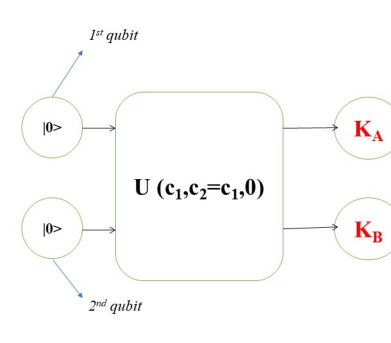
<figcaption class="paper-figure-caption"><b>Fig 1.</b> Figure 1: Schematic representation of the two-qubit quantum game protocol.</figcaption>
</figure>
<figure class="paper-figure-card">
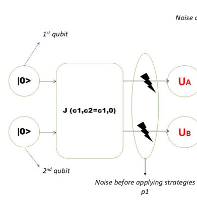
<figcaption class="paper-figure-caption"><b>Fig 2.</b> Figure 2: Schematic representation of the two-qubit quantum game protocol with amplitude-damping noise applied before and after the players’ strategic operations.</figcaption>
</figure>
<figure class="paper-figure-card">
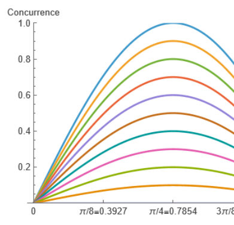
<figcaption class="paper-figure-caption"><b>Fig 3.</b> Figure 3: Concurrence as a function of the TFIM evolution parameter Jt for different amplitude damping probabilities p, with the initial state |00⟩.</figcaption>
</figure>
<figure class="paper-figure-card">
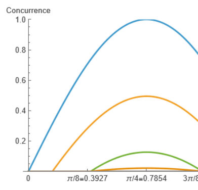
<figcaption class="paper-figure-caption"><b>Fig 4.</b> Figure 4: Concurrence as a function of the TFIM evolution parameter Jt for different amplitude damping probabilities p, with the initial state |11⟩.</figcaption>
</figure>
<figure class="paper-figure-card">
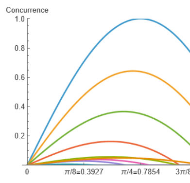
<figcaption class="paper-figure-caption"><b>Fig 5.</b> Figure 5: Concurrence as a function of the TFIM evolution parameter Jt for different amplitude damping probabilities p, with the initial state |01⟩and strategy pair (I, σx).</figcaption>
</figure>
</div>

<p><strong>Summary.</strong> This paper analyzes two-player quantum games based on the TFIM under amplitude-damping noise to study entanglement dynamics. It demonstrates that decoherence erodes quantum strategic advantages, forcing outcomes toward classical predictions. The study specifically tracks entanglement sudden birth and death, revealing that quantum correlations are highly sensitive to environmental noise and initial conditions.</p>
<p><strong>Why it may be interesting.</strong> This work directly addresses open quantum systems dynamics, showing how environmental coupling (decoherence) fundamentally limits the quantum advantage in complex protocols like quantum games, which is highly relevant to quantum computation and information processing.</p>
<details>
<summary>Detailed structure</summary>
<p><strong>Main problem.</strong> The paper investigates how entanglement dynamics, specifically the sudden birth and death of entanglement, are affected in quantum games when the system is subjected to decoherence.</p>
<p><strong>Main result.</strong> Decoherence progressively suppresses quantum strategic advantages, causing payoffs to collapse to classical limits, while entanglement dynamics show initial state and strategy-dependent non-monotonic behavior.</p>
<p><strong>Method.</strong> The analysis uses the density matrix formalism to track quantum state evolution under amplitude-damping noise, calculating payoffs, concurrence, and coherence.</p>
<p><strong>Model / system.</strong> The system is a two-player quantum game modeled using the Transverse Field Ising Model (TFIM) Hamiltonian, evolving under unitary dynamics followed by amplitude-damping noise.</p>
<p><strong>Key observables.</strong> Player payoffs, Concurrence (entanglement), Coherence, and the dynamics of entanglement sudden birth and death.</p>
<p><strong>Important parameters / regimes.</strong> Damping probability ($p$), the effective evolution time ($Jt$), and the initial quantum state.</p>
<p><strong>Assumptions / limitations.</strong> The noise is modeled by amplitude damping, and for simplicity, the noise strength is assumed equal before and after strategic operations ($p_1 = p_2 = p$).</p>
<p><strong>Figures summary.</strong> Figures schematically illustrate the general and noisy quantum game protocol, and specific plots show coherence and concurrence as functions of the evolution time ($J_t$) for various damping probabilities ($p$).</p>
<p><strong>Paper structure.</strong> The paper introduces the quantum game framework using the TFIM, details the protocol incorporating amplitude damping noise, analyzes the resulting payoffs and quantum correlations (concurrence/coherence) across different noise regimes, and discusses the implications for quantum strategy.</p>
</details>
<details>
<summary>Abstract</summary>
<p>Quantum game theory investigates the influence of quantum resources on strategic decision-making. In this work, two-player quantum games based on the Transverse Field Ising Model(TFIM) are investigated under amplitude-damping decoherence. The TFIM Hamiltonian naturally produces a family of entangling gates, enabling a physically motivated implementation of quantum games. The effects of noise on Nash equilibria, players' payoffs, concurrence and coherence of the quantum states for different initial states and strategy pairs are analyzed. The results show that decoherence progressively suppresses quantum strategic advantages, with maximum damping driving all outcomes to identical classical payoffs. The concurrence and coherence analysis of the states generated in the quantum game reveal initial state and strategy dependent quantum correlation dynamics, including entanglement sudden birth and death.</p>
</details>
<p><sub><a href="#top">↑ back to top</a></sub></p>

<p><a id="paper-2609.11585"></a></p>
<h3 id="heterogeneously-integrated-efficient-and-widely-tunable-lasers-at-795-nm-for-rubidium-based-quantum-technologies"><a href="http://arxiv.org/abs/2609.11585v1">Heterogeneously Integrated Efficient and Widely Tunable Lasers at 795 nm for Rubidium-Based Quantum Technologies</a></h3>
<p><strong>Authors:</strong> Max Kiewiet, Stijn Cuyvers, Tom Reep, Konstantinos Akritidis, Gaudhaman Jeevanandam, Manuel Reza, Roelof Jansen, Pol Van Dorpe, Günther Roelkens, Kasper Van Gasse, Bart Kuyken<br>
<strong>Type:</strong> experiment · <strong>Category:</strong> other · <strong>PDF:</strong> <a href="https://arxiv.org/pdf/2609.11585v1">https://arxiv.org/pdf/2609.11585v1</a><br>
<strong>Analysis basis:</strong> full PDF text, analyzed in chunks
<strong>Topic relevance:</strong> <code>QC/QI experiment</code> <strong>3/5</strong> · <code>quantum optics experiment</code> <strong>3/5</strong> · <code>analog quantum simulation</code> <strong>2/5</strong> · <code>interference shaping light</code> <strong>2/5</strong> · <code>driven-dissipative phase transition</code> <strong>1/5</strong> · <code>superradiant laser</code> <strong>1/5</strong></p>
<div class="figure-strip-hint">↔ Scroll figures horizontally</div>
<div class="paper-figures-scroll">
<figure class="paper-figure-card">
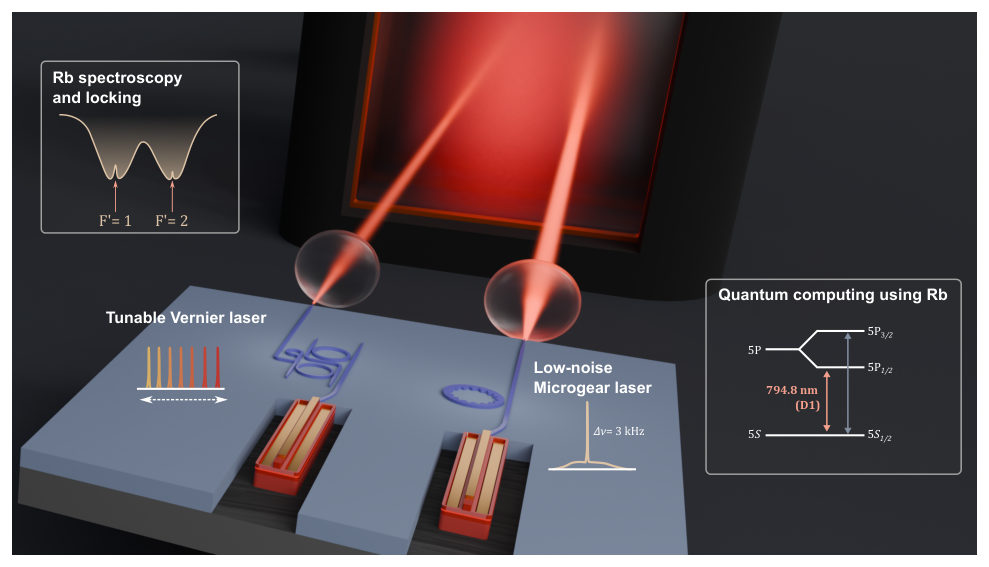
<figcaption class="paper-figure-caption"><b>Fig 1.</b> FIG. 1. Scaling Rubidium-Based Quantum Control Systems. An outlook schematic of the tunable Vernier laser and the low-noise microgear laser shining at a Rb vapor cell with highlighted applications (insets): Rb spectroscopy and wavelength locking; interaction with the Rb D1 line for quantum computing. The D1 wavelength labeled 794.8 nm in the figure is the air wavelength, corresponding to 795.0 nm in vacuum.</figcaption>
</figure>
<figure class="paper-figure-card">
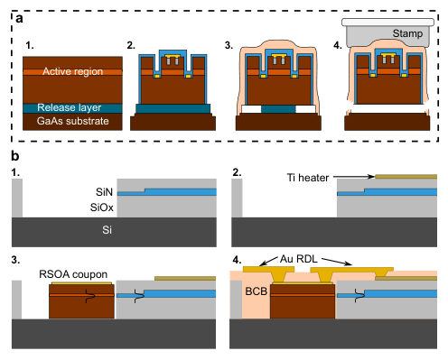
<figcaption class="paper-figure-caption"><b>Fig 2.</b> FIG. 2. III-V coupon preparation and integration pro- cess. a. III-V process for coupon fabrication with: 1. epitax- ial layer stack; 2. laser definitions including waveguide ridge, facet etch and coating, and metal contacts; 3. photoresist en- capsulation and release etch, leaving free-standing coupons; 4. pick-up of the coupon using an elastomer stamp, breaking the photoresist tethers. b. integration process on the SiN wafer with: 1. recess etch in the SiN wafer; 2. Ti heater definition; 3. micro-transfer printing of the III-V coupon in the recess; 4. BCB planarization, via etching, and RDL met- allization.</figcaption>
</figure>
<figure class="paper-figure-card">
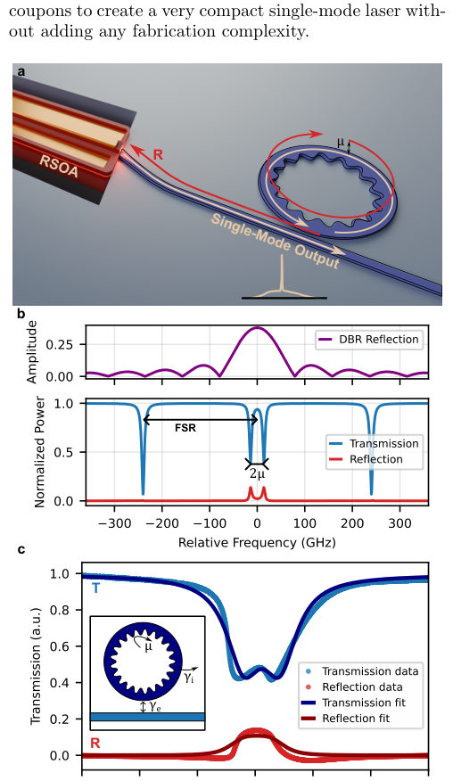
<figcaption class="paper-figure-caption"><b>Fig 3.</b> FIG. 3. Working principle and measurement of the microgear laser. a. schematic of the laser cavity; b. sim- ulated example reflection and transmission spectra of a mi- crogear reflector showing a single split and reflecting mode; c. measurement of the microgear reflector with inset: model schematic of the reflector.</figcaption>
</figure>
<figure class="paper-figure-card">
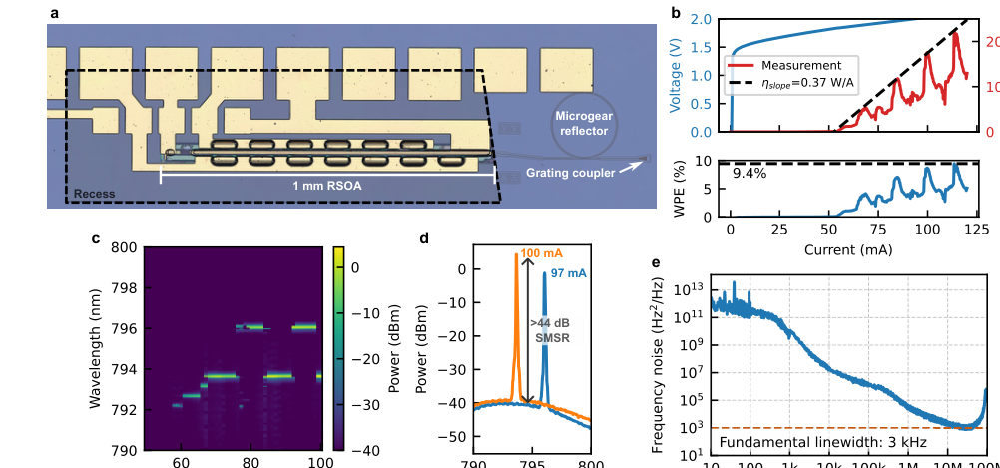
<figcaption class="paper-figure-caption"><b>Fig 4.</b> FIG. 4. Results of the microgear laser with a. microscope image of the fully-processed laser; b. LIV curve of the microgear laser as well as the corresponding wall-plug efficiency (WPE); c. lasing spectra as a function of the laser driving current; d. lasing spectra of the two dominant laser modes; and e. frequency-noise spectrum of the lasing mode at 100 mA.</figcaption>
</figure>
<figure class="paper-figure-card">
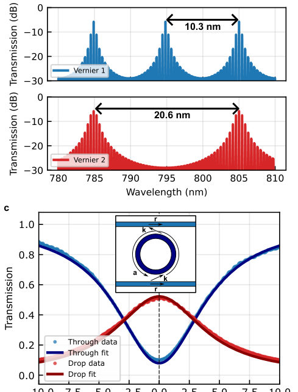
<figcaption class="paper-figure-caption"><b>Fig 5.</b> FIG. 5. Explanation of the Vernier laser with a. schematic of the Vernier laser cavity including microheaters; b. modeled transmission spectra of the two Vernier filters used in this work; and c. transmission measurements of the microring resonator with inset: transfer-matrix model expla- nation used to fit to the measurement data.</figcaption>
</figure>
</div>

<p><strong>Summary.</strong> This paper presents a breakthrough in integrating high-performance lasers onto silicon nitride platforms using micro-transfer printing. The resulting compact, tunable, and efficient laser toolkit is specifically designed to replace bulky external lasers for next-generation quantum technologies and optical atomic clocks utilizing Rubidium atoms.</p>
<p><strong>Why it may be interesting.</strong> This work directly addresses the hardware bottleneck for quantum information processing and optical metrology by providing a compact, high-performance, and scalable light source tailored for atomic physics experiments.</p>
<details>
<summary>Detailed structure</summary>
<p><strong>Main problem.</strong> Scaling quantum processors and optical atomic clocks requires drastically reducing the size, weight, power, and cost of optical control systems by integrating lasers.</p>
<p><strong>Main result.</strong> The authors demonstrated a highly efficient, compact, and tunable integrated laser source capable of operating at the required near-infrared wavelengths for Rubidium quantum technologies.</p>
<p><strong>Method.</strong> They developed a wafer-scalable method using micro-transfer printing to butt-couple GaAs-based amplifiers into silicon nitride waveguides, forming extended-cavity single-mode lasers.</p>
<p><strong>Model / system.</strong> The platform integrates III-V semiconductor amplifiers (RSOAs) into a silicon nitride (SiN) waveguide structure. The laser functionality is realized using a microgear reflector structure for single-mode operation and Vernier filters for tunability.</p>
<p><strong>Key observables.</strong> Narrow fundamental linewidth (3 kHz), on-chip output power (&gt;22 mW), high wall-plug efficiency (9.4%), and wide tuning ranges (e.g., 140 GHz fine-tuning).</p>
<p><strong>Important parameters / regimes.</strong> Target wavelength of 795 nm (for Rubidium D1 line); the integration technique overcomes thermal dissipation issues associated with traditional wafer bonding.</p>
<p><strong>Assumptions / limitations.</strong> The MTP technique is superior to traditional bonding methods due to better heat sinking and coupling efficiency; future work requires optimizing the SiN cavity design and adding heaters for full resonance tuning.</p>
<p><strong>Figures summary.</strong> Figures illustrate the schematic applications for Rb spectroscopy, the detailed MTP integration process, and the measured performance characteristics of the microgear and tunable lasers.</p>
<p><strong>Paper structure.</strong> The paper establishes the need for photonic integration, details the MTP fabrication process for coupling GaAs to SiN, presents characterization results for the narrow-linewidth microgear laser, and then demonstrates the versatility of the platform using a widely tunable Vernier laser.</p>
</details>
<details>
<summary>Abstract</summary>
<p>Scaling quantum processors and optical atomic clocks fundamentally requires orders-of-magnitude reductions in the size, weight, power, and cost of optical control systems. Photonic integration of lasers is critical to fulfill these requirements. At the near-infrared wavelengths required for atomic clocks and quantum computing through manipulation of rubidium atoms, laser integration is hindered by difficulty in light coupling and poor heat dissipation. Here, we introduce a wafer-scalable method utilizing micro-transfer printing to integrate GaAs-based amplifiers in etched recesses, directly butt-coupled to silicon nitride waveguides. We demonstrate extended-cavity single-mode lasers using this integration approach. Our compact microgear laser achieves a narrow 3 kHz fundamental linewidth at an on-chip output power of &gt;22 mW -- a record for a single-mode heterogeneously integrated laser in the 780-800 nm band -- with a wall-plug efficiency of 9.4%, showcasing the high-power and efficiency potential of this integration approach. Additionally, we demonstrate a widely tunable laser leveraging Vernier filters to achieve lasing with 9 nm coarse tuning, a quasi-continuous fine-tuning range exceeding 140 GHz, and a mode-hop-free tuning range of 45 GHz. Our scalable integrated laser toolkit shows great promise for replacing macroscopic external-cavity diode lasers in next-generation quantum technologies and optical atomic clocks.</p>
</details>
<p><sub><a href="#top">↑ back to top</a></sub></p>

<p><a id="paper-2609.11635"></a></p>
<h3 id="quantum-hardware-spectral-co-design-framework-for-multifrequency-rydberg-electrometry"><a href="http://arxiv.org/abs/2609.11635v1">Quantum-hardware spectral co-design framework for multifrequency Rydberg electrometry</a></h3>
<p><strong>Authors:</strong> Song Huang, Guibin Tian, Fernando Quijandría, Zhengjiang Li, Zhimin He, Franco Nori, Yong Lu<br>
<strong>Type:</strong> both · <strong>Category:</strong> other · <strong>PDF:</strong> <a href="https://arxiv.org/pdf/2609.11635v1">https://arxiv.org/pdf/2609.11635v1</a><br>
<strong>Analysis basis:</strong> full PDF text, analyzed in chunks
<strong>Topic relevance:</strong> <code>Rydberg arrays</code> <strong>3/5</strong> · <code>Tavis-Cummings &amp; cavity-many-emitter</code> <strong>2/5</strong> · <code>analog quantum simulation</code> <strong>2/5</strong> · <code>methods for driven-dissipative</code> <strong>2/5</strong> · <code>quantum optics experiment</code> <strong>2/5</strong> · <code>QC/QI experiment</code> <strong>1/5</strong></p>
<div class="figure-strip-hint">↔ Scroll figures horizontally</div>
<div class="paper-figures-scroll">
<figure class="paper-figure-card">
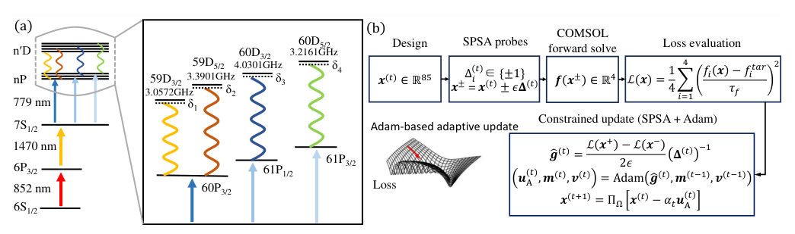
<figcaption class="paper-figure-caption"><b>Fig 1.</b> FIG. 1. Multimode microwave Rydberg electrometry with EIT and constrained inverse design. (a) Energy level diagram for a Cs atom, driven by 852-nm probe, 1470-nm dressing, and 779-nm coupling fields. Four selected cavity modes are designed to align with four microwave transitions shown in the inset as four different waves. (b) Constrained SPSA–Adam optimization for an 85-parameter geometry x(t). Two-point SPSA evaluations x± = x(t) ± ϵ ∆(t) are simulated with a COMSOL eigenfrequency solver to obtain four-mode outputs f(x±); the normalized objective L yields a stochastic gradient estimate used by Adam. The update is projected onto a fabrication feasible set to produce x(t+1).</figcaption>
</figure>
<figure class="paper-figure-card">
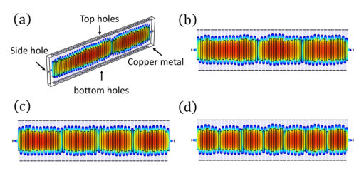
<figcaption class="paper-figure-caption"><b>Fig 2.</b> FIG. 2. Finite-element eigenmode field distributions of the multimode elongated electrometry. (a) Electric-field magni- tude |E(r)| of eigenmode 2 (TE102, 3D cutaway view). The drilled top and bottom holes overlap to form and locally shape the cavity volume, whereas the side hole provides optical access for the excitation and probe beams. (b)–(d) |E(r)| of eigen- modes 3, 4, and 7 (TE103, TE104, and TE107, respectively), selected for alignment with the target microwave transitions in the Rydberg-EIT scheme.</figcaption>
</figure>
<figure class="paper-figure-card">
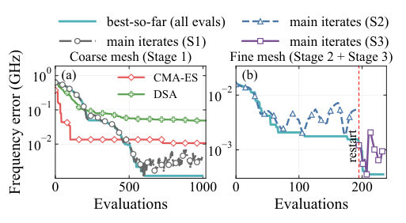
<figcaption class="paper-figure-caption"><b>Fig 3.</b> FIG. 3. Convergence of the three-stage simulator-in-the-loop SPSA–Adam optimization and comparison with CMA-ES and DSA baselines. The vertical axis shows the aggregate frequency mismatch Ef = P</figcaption>
</figure>
</div>

<p><strong>Summary.</strong> The authors present a quantum-hardware spectral co-design framework to engineer microwave cavities for high-precision Rydberg electrometry. By coupling a specialized SPSA–Adam optimizer to full-wave FEM simulations, they successfully tuned the cavity to simultaneously match four distinct quantum transition frequencies. This method yields a highly robust, compact, and significantly more sensitive sensing architecture than previously achieved.</p>
<p><strong>Why it may be interesting.</strong> This work provides a powerful, generalizable computational methodology for designing quantum hardware. The coupling of advanced optimization techniques (SPSA-Adam) directly to complex physical simulators (FEM) is highly relevant for realizing next-generation quantum devices.</p>
<details>
<summary>Detailed structure</summary>
<p><strong>Main problem.</strong> The paper addresses the general spectral co-design problem: engineering electromagnetic hardware to precisely match discrete, quantum-defined spectral constraints for multi-frequency quantum sensing.</p>
<p><strong>Main result.</strong> A novel co-design framework was developed that successfully aligned four high-Q cavity eigenmodes with target Cs Rydberg transitions, achieving extremely low frequency errors and significantly enhancing input-power sensitivity.</p>
<p><strong>Method.</strong> The optimization uses a simulator-in-the-loop approach, coupling a Constrained Simultaneous Perturbation Stochastic Approximation (SPSA)–Adam optimizer to full-wave finite-element eigenmode simulations.</p>
<p><strong>Model / system.</strong> The physical system is a copper cavity structure designed for multifrequency Rydberg electrometry using Cesium (Cs) atoms. The geometry is parameterized by an 85-dimensional vector, and the objective is to minimize the frequency mismatch between the cavity modes and four selected Rydberg transition frequencies.</p>
<p><strong>Key observables.</strong> Relative frequency error (achieved as low as $8.42 	imes 10^{-7}$), input-power-sensitivity enhancement ($\approx 4.04 	imes 10^3$), and the total frequency mismatch ($\Delta f$).</p>
<p><strong>Important parameters / regimes.</strong> Four target Cs Rydberg transitions (e.g., 3.0572 THz), the 85-dimensional design vector $\mathbf{x}$, and the fabrication tolerance ($\Delta_{	ext{tol}}$).</p>
<p><strong>Assumptions / limitations.</strong> The optimization relies on the ability to repeatedly call a full-wave finite-element simulator (COMSOL) within the optimization loop, and the process involves approximations like SPSA gradient estimation and quantization to a fabrication grid.</p>
<p><strong>Figures summary.</strong> Figures illustrate the energy level diagram for the excitation scheme and the optimization process, showing the convergence of the SPSA–Adam method compared to CMA-ES and DSA baselines.</p>
<p><strong>Paper structure.</strong> The paper details the formulation of the spectral co-design problem, introduces the SPSA–Adam optimization protocol, presents the results of optimizing the geometry for four channels, and concludes by comparing its performance against established optimization benchmarks.</p>
</details>
<details>
<summary>Abstract</summary>
<p>Engineering electromagnetic hardware to satisfy discrete quantum-defined spectral constraints constitutes a general spectral co-design problem for quantum systems. Here we address this challenge in multifrequency Rydberg electrometry by directly coupling a fabrication-constrained simultaneous perturbation stochastic approximation (SPSA)--Adam optimizer to full-wave finite-element eigenmode simulations. Requiring neither analytical nor adjoint gradients, the method operates over a discrete design space containing approximately $10^{300}$-configurations and yields a novel multimode electrometry architecture that simultaneously aligns four high-$Q$ eigenmodes with four selected Cs Rydberg transitions. The optimized design remains highly robust to fabrication imperfections, achieving a relative frequency error as low as $8.42\times10^{-7}$ while reducing the device length by a factor of $1.75\times10^{2}$, thereby overcoming the difficulty of simultaneous multimode spectral matching encountered in conventional design. For a comparable simulation budget, the proposed co-design framework achieves frequency-matching errors approximately 10 and 41 times smaller than those of covariance matrix adaptation evolution strategy and discrete simulated annealing, respectively. The electrometry is predicted to provide an average input-power-sensitivity enhancement of approximately $4.04\times10^{3}$, demonstrating quantum--hardware spectral co-design as a general route toward compact hardware for multichannel quantum sensing.</p>
</details>
<p><sub><a href="#top">↑ back to top</a></sub></p>

<p><a id="paper-2609.11732"></a></p>
<h3 id="hilbert-space-selected-switch-of-helical-edges-in-an-artificial-quantum-hall-insulator"><a href="http://arxiv.org/abs/2609.11732v1">Hilbert-space selected switch of helical edges in an artificial quantum Hall insulator</a></h3>
<p><strong>Authors:</strong> Naijie Ren, Zhiren Xiong, Kaining Yang, Yanran Shi, Hanwen Wang, Kenji Watanabe, Takashi Taniguchi, Neng Wan, Xiaojun Jia, Jianpeng Liu, Zheng Vitto Han, Yaning Wang<br>
<strong>Type:</strong> both · <strong>Category:</strong> other · <strong>PDF:</strong> <a href="https://arxiv.org/pdf/2609.11732v1">https://arxiv.org/pdf/2609.11732v1</a><br>
<strong>Analysis basis:</strong> full PDF text, analyzed in chunks
<strong>Topic relevance:</strong> <code>analog quantum simulation</code> <strong>3/5</strong> · <code>driven-dissipative phase transition</code> <strong>3/5</strong> · <code>quantum measurements</code> <strong>2/5</strong> · <code>Keldysh / 2PI / non-Gaussian methods</code> <strong>1/5</strong> · <code>methods for driven-dissipative</code> <strong>1/5</strong></p>
<div class="figure-strip-hint">↔ Scroll figures horizontally</div>
<div class="paper-figures-scroll">
<figure class="paper-figure-card">
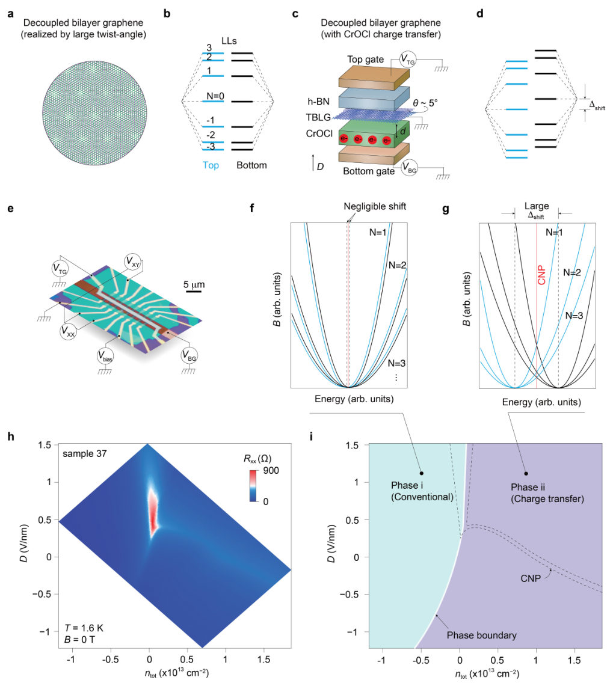
<figcaption class="paper-figure-caption"><b>Fig 1.</b> Fig. 1 Charge-transfer-induced reconstruction of Landau levels in large-angle twisted bilayer graphene. a, Schematic of large-angle twisted bilayer graphene, in which the two graphene layers are electronically decoupled by the large momentum mismatch between their Dirac cones. b, Corresponding Landau-level (LL) structure of the top and bottom graphene layers, showing two nearly energy-aligned sets of LLs in the absence of appreciable interlayer energy offset. c, Schematic of the dual-gated large-angle twisted bilayer graphene device coupled to a CrOCl substrate. Interfacial charge transfer generates a built-in electrostatic gradient across the two graphene layers, in addition to the...</figcaption>
</figure>
<figure class="paper-figure-card">
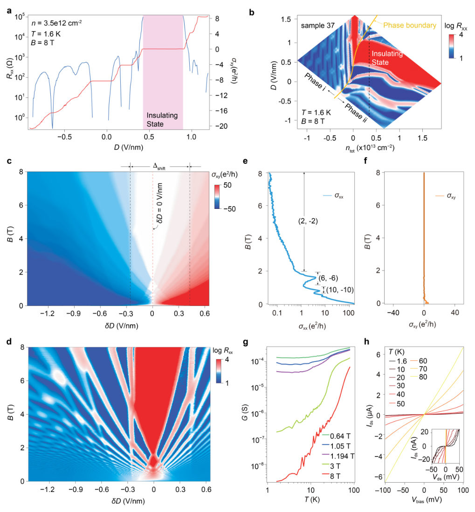
<figcaption class="paper-figure-caption"><b>Fig 2.</b> Fig. 2 Charge-transfer-induced Landau-level crossings and the insulating state at charge neutrality. a, Longitudinal resistance Rxx and transverse Hall response σxy as a function of displacement field D at B = 8 T and T = 1.6 K, measured at a fixed total carrier density n = 3.5 × 1012 cm−2. The shaded region marks the strongly insulating state. b, Longitudinal resistance Rxx mapped in the D–ntot plane at B = 8 T and T = 1.6 K. The high-resistance region emerging in the charge-transfer phase is highlighted. The dashed line indicates the trajectory corresponding to a and to the field-dependent measurements in the following panels. c, Hall conductivity σxy as a function of magnetic field B and...</figcaption>
</figure>
<figure class="paper-figure-card">
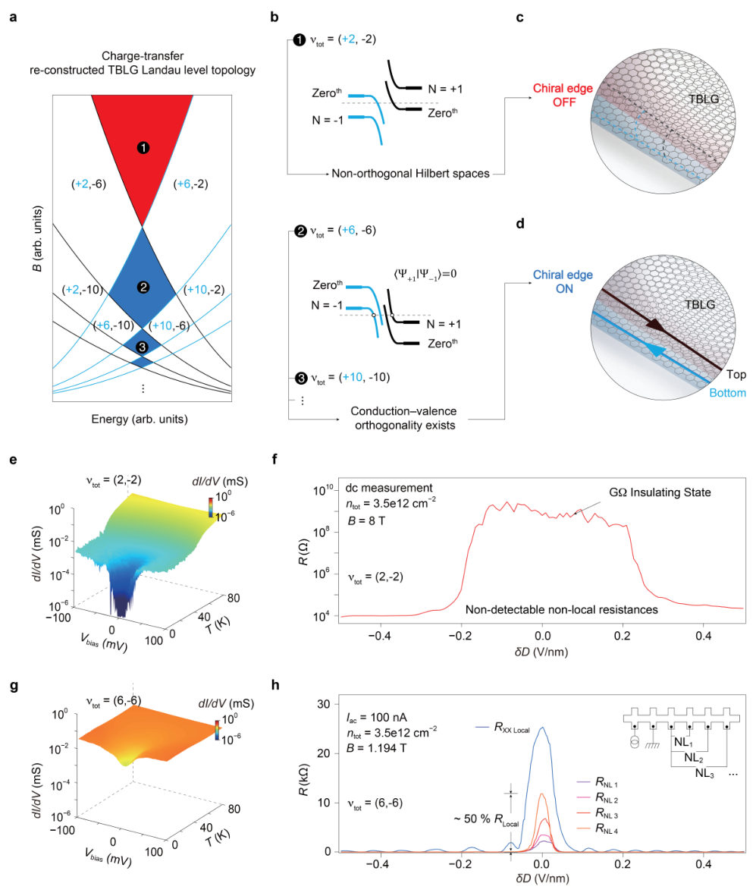
<figcaption class="paper-figure-caption"><b>Fig 3.</b> Fig. 3 Hilbert-space-selected switching of edge transport at composite zero filling. a, Schematic Landau-level topology reconstructed by interfacial charge transfer. The two energy-shifted Dirac Landau spectra generate a sequence of composite quantum Hall states at νtot = 0, including (+2, −2), (+6, −6) and (+10, −10). Numbered regions indicate representative crossings. b, Schematic Landau-levels forming the (+2, −2) and (+6, −6) states. For (+2, −2), the crossing involves only the zeroth Landau levels and therefore lacks conduction–valence orbital orthogonality. For (+6, −6), the Landau spinors are orthogonal, protecting the chiral edge. The same orthogonality extends to higher-order...</figcaption>
</figure>
<figure class="paper-figure-card">
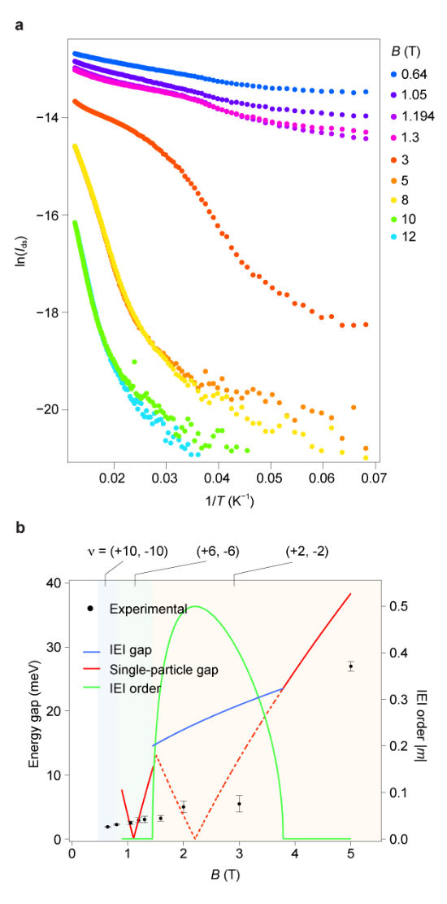
<figcaption class="paper-figure-caption"><b>Fig 4.</b> Fig. 4 Gap evolution of the artificial quantum Hall insulator. a, Arrhe- nius plots of the source–drain current, ln(Ids) versus 1/T, measured at the charge-neutrality point for selected magnetic fields. The thermally acti- vated regimes are used to extract the activation energy ∆Ea. b, Magnetic- field dependence of the experimentally extracted activation gap (black cir- cles), compared with the calculated interlayer excitonic-insulator (IEI) gap (blue), single-particle Landau-level gap (red) and normalized IEI order pa- rameter |m| (green). The shaded regions indicate the successive composite quantum Hall sectors (+10, −10), (+6, −6) and (+2, −2). Upon entering the (+2, −2) sector,...</figcaption>
</figure>
</div>

<p><strong>Summary.</strong> This work demonstrates a method to engineer artificial quantum Hall insulators using charge transfer between $ ext{CrOCl}$ and twisted bilayer graphene. By controlling the composite filling state, researchers can switch the edge transport from highly conductive to fully insulating. This control is explained by the removal of specific orbital components within the Landau-spinor Hilbert space.</p>
<p><strong>Why it may be interesting.</strong> The concept of wavefunction-selective control over edge modes via Hilbert-space engineering is highly relevant to designing novel quantum devices and understanding topological phase transitions in engineered heterostructures.</p>
<details>
<summary>Detailed structure</summary>
<p><strong>Main problem.</strong> The challenge of experimentally controlling and reconstructing the topology of edge channels in artificial quantum Hall insulators.</p>
<p><strong>Main result.</strong> Interfacial charge transfer in a $ ext{CrOCl}$-twisted bilayer graphene system allows for the switching between insulating and highly conductive edge states by manipulating the Landau-spinor Hilbert space content.</p>
<p><strong>Method.</strong> The study combines theoretical modeling of charge-transfer-induced band reconstruction with low-temperature transport measurements (longitudinal and non-local resistance).</p>
<p><strong>Model / system.</strong> The system is a dual-gated large-angle twisted bilayer graphene interfaced with $   ext{CrOCl}$. The physics is modeled by considering the coupling and energy shift ($\Delta_{   ext{shift}}$) between two decoupled Dirac Landau-level ladders.</p>
<p><strong>Key observables.</strong> Longitudinal resistance ($R_{xx}$), non-local resistance ($R_{	ext{NL}}$), and the transition between insulating and conducting edge regimes.</p>
<p><strong>Important parameters / regimes.</strong> Composite filling configurations like $(+2, -2)$, $(+6, -6)$, and $(+10, -10)$; the relative energy shift ($\Delta_{	ext{shift}}$) induced by charge transfer.</p>
<p><strong>Assumptions / limitations.</strong> The switching behavior is fundamentally attributed to the removal of orthogonal orbital components ($N=\pm 1$) from the Landau-spinor Hilbert space as the filling changes.</p>
<p><strong>Figures summary.</strong> Figures illustrate the LL structure before and after charge transfer, showing the separation of Landau ladders, and map out the $R_{xx}$ vs. carrier density plane, demonstrating distinct insulating and conducting regimes.</p>
<p><strong>Paper structure.</strong> The paper first establishes the physical platform and the problem of topological control. It then presents theoretical modeling of the charge transfer mechanism, followed by experimental measurements characterizing the transport response across different composite filling states.</p>
</details>
<details>
<summary>Abstract</summary>
<p>Quantum Hall effects (QHE) host one-dimensional topologically-protected edge channels, which can serve as an essential ingredient in exotic quantum electronic systems. Yet the manual reconstruction of Landau-level topology, by electrostatic confinement or symmetry breaking, remains experimentally challenging. Here, we show that interfacial charge transfer in between CrOCl and large-angle twisted bilayer graphene offsets the two otherwise decoupled Dirac Landau-level ladders in each graphene layer, creating a new sequence of composite filling configurations. At charge neutrality, the composited $(+2,-2)$ state involves only the zeroth Landau levels and becomes fully insulating, with longitudinal resistance reaching the G$Ω$ regime. By contrast, higher composite zero-filling quantum Hall states, including $(+6,-6)$ and $(+10,-10)$, retain counter-propagating helical edge channels and exhibit pronounced non-local transport, reaching up to $50\%$ of the local response. We attribute such switching-behavior to the Landau-spinor Hilbert space -- as the filling is reduced from $(+6,-6)$ to $(+2,-2)$, the orthogonal $N=\pm1$ orbital components are removed, eliminating the edge-compatible channel and gapping both bulk and boundary transport. The interaction nature of the observed gapped sates was further examined both experimentally and theoretically. Our results suggest that charge transfer provides a direct route to engineer artificial quantum Hall insulators, opening possibilities for wavefunction-selective control of helical edge modes.</p>
</details>
<p><sub><a href="#top">↑ back to top</a></sub></p>

<p><a id="paper-2609.10683"></a></p>
<h3 id="floquet-majorana-xyz-codes-with-tunable-logical-dynamics"><a href="http://arxiv.org/abs/2609.10683v1">Floquet Majorana XYZ Codes with Tunable Logical Dynamics</a></h3>
<p><strong>Authors:</strong> Xinyu Sun, Hong Yao<br>
<strong>Type:</strong> theory · <strong>Category:</strong> quantum information and computing · <strong>PDF:</strong> <a href="https://arxiv.org/pdf/2609.10683v1">https://arxiv.org/pdf/2609.10683v1</a><br>
<strong>Analysis basis:</strong> full PDF text, analyzed in chunks
<strong>Topic relevance:</strong> <code>analog quantum simulation</code> <strong>3/5</strong> · <code>quantum measurements</code> <strong>3/5</strong> · <code>correlated / nonlocal dissipation</code> <strong>1/5</strong> · <code>driven-dissipative phase transition</code> <strong>1/5</strong> · <code>methods for driven-dissipative</code> <strong>1/5</strong></p>
<div class="figure-strip-hint">↔ Scroll figures horizontally</div>
<div class="paper-figures-scroll">
<figure class="paper-figure-card">
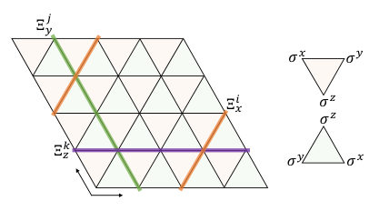
<figcaption class="paper-figure-caption"><b>Fig 1.</b> FIG. 1. Static Majorana XYZ subsystem code. The two inequivalent triangle operators on the right define the gauge generators A∆and B∇. The colored lines on the triangular lattice show representative noncontractible loop operators Ξx, Ξy, and Ξz. Parallel loops differ by stabilizers and therefore provide equivalent logical representatives.</figcaption>
</figure>
<figure class="paper-figure-card">
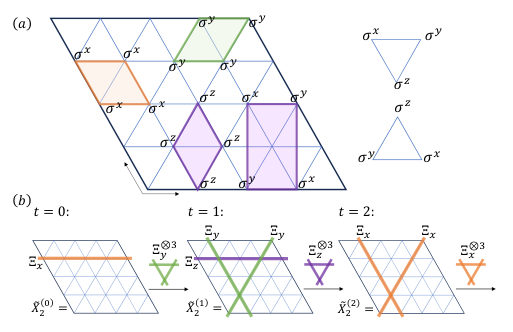
<figcaption class="paper-figure-caption"><b>Fig 2.</b> FIG. 2. Three-step measurement protocol and dynamical logical operator. (a) The three families of four-qubit paral- lelogram operators, Px, Py, and Pz, measured successively in the T = 3 protocol. The Pauli labels indicate the corre- sponding single-Pauli-type operators on each parallelogram. (b) Evolution of the second logical Pauli representative for L = 4n. Here Ξ⊗3 a denotes the shorthand Ξh,aΞv,aΞd,a. The logical operator eZ2 = HL remains time independent through- out the cycle, whereas its conjugate representative evolves as e X(0) 2 →e X(1) 2 →e X(2) 2 under successive measurements of Px, Py, and Pz. The three representatives describe the same encoded logical Pauli operator at the...</figcaption>
</figure>
<figure class="paper-figure-card">
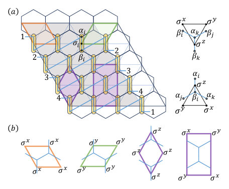
<figcaption class="paper-figure-caption"><b>Fig 3.</b> FIG. 3. Local Majorana realization with one open spa- tial direction. (a) Honeycomb-lattice Majorana modes or- dered along the indicated path. Each yellow region denotes a unit cell containing αi and βi, related to the effective spin σi through Eq. (15). The two retained triangle generators admit local four-Majorana representations, shown on the right. (b) Spin representations of the x-, y-, and z-type parallelogram measurements and the rectangle measurement. Under the Majorana mapping, the x- and y-type parallelograms and the rectangle are local four-Majorana parity operators, whereas the z-type one is an eight-Majorana parity operator.</figcaption>
</figure>
</div>

<p><strong>Summary.</strong> This paper develops Floquet quantum error-correcting codes based on the Majorana XYZ subsystem code, demonstrating that the logical properties are highly tunable by modifying the measurement schedule. The authors show that the code can support different types of logical qubits (static vs. dynamical) depending on the lattice size and the measurement cycle, and they provide a first construction realizing this on local Majorana parity measurements.</p>
<p><strong>Why it may be interesting.</strong> This work directly addresses the implementation of topological quantum computation using Majorana fermions, which is a central theme in quantum information theory, by providing concrete, physically realizable protocols.</p>
<details>
<summary>Detailed structure</summary>
<p><strong>Main problem.</strong> The paper constructs and characterizes Floquet quantum error-correcting codes based on the Majorana XYZ subsystem code, focusing on how logical dynamics depend on the measurement schedule and lattice size.</p>
<p><strong>Main result.</strong> The code exhibits parity- and schedule-dependent logical dynamics, allowing the encoded logical degree of freedom to switch between static and partially dynamical forms by adjusting the measurement cycle. Furthermore, it achieves a direct local Majorana realization for even lattice sizes.</p>
<p><strong>Method.</strong> The authors analyze the evolution of the instantaneous stabilizer group (ISG) under periodic measurements (Floquet cycles) and derive the code parameters by analyzing the algebraic structure of the stabilizer group generated by local parity measurements.</p>
<p><strong>Model / system.</strong> The system is the Majorana XYZ subsystem code realized on an $L 	imes L$ periodic triangular lattice of Majorana modes. The encoding is achieved by implementing the code using a sequence of local parity measurements ($P_x, P_y, P_z$).</p>
<p><strong>Key observables.</strong> The number of supported logical qubits ($k_s, k_p$), the code distance ($d$), and the time evolution of Pauli representatives for the logical operators.</p>
<p><strong>Important parameters / regimes.</strong> Lattice size $L$ (especially its modulo 4 behavior), the measurement cycle length ($T=2$ vs $T=3$), and the parity of $L$.</p>
<p><strong>Assumptions / limitations.</strong> The analysis assumes that local Majorana parity measurements are native operations, and the local realization relies on boundary-peeling arguments for even $L$.</p>
<p><strong>Figures summary.</strong> Figures illustrate the static code structure, the three-step measurement protocol using parallelogram operators, and the local Majorana realization on a lattice geometry.</p>
<p><strong>Paper structure.</strong> The paper progresses by first defining the static code, then analyzing the dynamics under a three-step Floquet cycle, detailing how $L \pmod 4$ dictates the logical structure, and finally establishing the direct local Majorana realization for even $L$ by analyzing the measurement group generators.</p>
</details>
<details>
<summary>Abstract</summary>
<p>We construct Floquet codes from the Majorana XYZ subsystem code with local realizations both in qubits and directly in microscopic Majorana modes with lattice size $L\times L$. For a three-step cycle, odd $L$ supports one static logical qubit, whereas even $L$ supports two. For even $L$ with $L=4n+2$, both logical qubits admit time-independent Pauli representatives. For $L=4n$, by contrast, one Pauli of the second logical qubit remains fixed throughout the cycle, while every representative of its conjugate must evolve through the measurement cycle. This distinction follows from a parity-dependent algebraic obstruction and disappears when the cycle is reduced to two steps, which restores a fully static logical pair. Thus, the same encoded logical degree of freedom can be switched between static and partially dynamical forms by the measurement schedule. With one open direction, suitable protocols can be implemented using only local Majorana parity measurements. To our knowledge, this is the first Floquet-code family with both a local qubit representation and a direct microscopic Majorana realization.</p>
</details>
<p><sub><a href="#top">↑ back to top</a></sub></p>

<p><a id="paper-2609.11187"></a></p>
<h3 id="physics-of-information-geometry-part-ii-small-step-active-inference-on-the-probability-simplex"><a href="http://arxiv.org/abs/2609.11187v1">Physics of Information Geometry - Part II: Small-Step Active Inference on the Probability Simplex</a></h3>
<p><strong>Authors:</strong> C. Emre Koksal, Deniz Sargun<br>
<strong>Type:</strong> theory · <strong>Category:</strong> statistical mechanics · <strong>PDF:</strong> <a href="https://arxiv.org/pdf/2609.11187v1">https://arxiv.org/pdf/2609.11187v1</a><br>
<strong>Analysis basis:</strong> full PDF text, analyzed in chunks
<strong>Topic relevance:</strong> <code>quantum measurements</code> <strong>3/5</strong> · <code>Keldysh / 2PI / non-Gaussian methods</code> <strong>2/5</strong> · <code>methods for driven-dissipative</code> <strong>2/5</strong> · <code>driven-dissipative phase transition</code> <strong>1/5</strong> · <code>non-equilibrium universality</code> <strong>1/5</strong></p>
<div class="figure-strip-hint">↔ Scroll figures horizontally</div>
<div class="paper-figures-scroll">
<figure class="paper-figure-card">
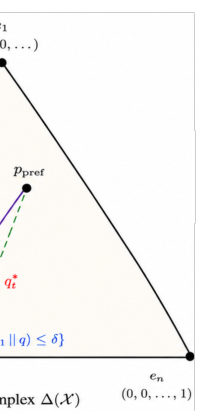
<figcaption class="paper-figure-caption"><b>Fig 1.</b> Fig. 1. Illustration of the information-geometric Pythagorean theorem on the proba- bility simplex. The admissible next-step distributions lie inside the KL ball Bδ(qt−1). The optimal incremental step q⋆ t is the projection of the preferred distribution ppref onto this ball. The resulting decomposition shows that the reduction in free energy is at least as large as the informational step size.</figcaption>
</figure>
<figure class="paper-figure-card">
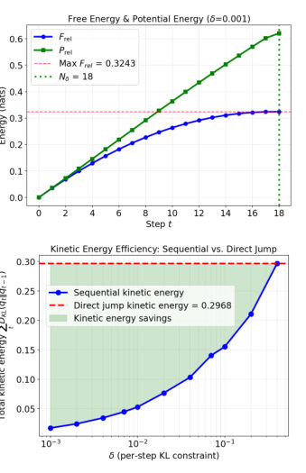
<figcaption class="paper-figure-caption"><b>Fig 2.</b> Fig. 2. Numerical results for π0 = (1/3, 1/3, 1/3), ppref = (0.7, 0.2, 0.1). Top-left: Optimal trajectory on the 2-simplex with δ = 0.001 (Nδ = 18 steps). Top-right: Evolution of relative free energy Frel and relative potential energy Prel along the path. Bottom-left: Stopping time Nδ and total kinetic cost as functions of the step-size constraint δ. Bottom-right: Total kinetic energy of the sequential strategy versus the direct-jump cost DKL(ppref∥π0).</figcaption>
</figure>
</div>

<p><strong>Summary.</strong> This work develops a geometric framework for understanding how belief states evolve on the probability simplex, treating the process as a physical system governed by a least-action principle. By minimizing an action functional derived from relative free energy and KL divergence, the authors derive the optimal update rule. This shows that optimal inference follows a path analogous to classical mechanics, providing deep connections between information theory and physics.</p>
<p><strong>Why it may be interesting.</strong> The connection between optimal inference (Free Energy Principle) and classical mechanics (Least Action Principle) provides a powerful, geometric framework for understanding non-equilibrium dynamics in complex systems, relevant for modeling open quantum systems or information flow.</p>
<details>
<summary>Detailed structure</summary>
<p><strong>Main problem.</strong> The paper determines the optimal sequence of distributions (path) for an agent to move from an initial belief state to a desired target distribution on the probability simplex.</p>
<p><strong>Main result.</strong> The optimal trajectory minimizes an accumulated action functional, leading to a closed-form update where the new distribution is an exponentially tilted version of the current one toward the preferred distribution.</p>
<p><strong>Method.</strong> It establishes a least-action principle by defining a relative free energy and using the Kullback-Leibler divergence as a discrete kinetic energy constraint.</p>
<p><strong>Model / system.</strong> The system is the belief state evolving on the probability simplex, $\Delta(X)$. The dynamics are governed by minimizing an action functional derived from information geometry.</p>
<p><strong>Key observables.</strong> Relative Free Energy, Relative Potential Energy, Kullback-Leibler (KL) divergence (as kinetic energy), and the Action Functional.</p>
<p><strong>Important parameters / regimes.</strong> The step size ($\delta$), which governs the kinetic energy budget, and the Lagrange multiplier ($\lambda_t$) associated with the constraint.</p>
<p><strong>Assumptions / limitations.</strong> The analysis relies on the small-step limit ($\delta 	o 0$) and the application of the information-geometric Pythagorean theorem.</p>
<p><strong>Figures summary.</strong> Figures illustrate the information-geometric Pythagorean theorem on the probability simplex, showing the optimal step as a projection onto a KL ball, and depict the stopping-time formulation on the 2-simplex.</p>
<p><strong>Paper structure.</strong> The paper builds the framework by defining relative free/potential energies, applying the Pythagorean theorem to justify small steps, formulating the problem as minimizing an action functional, and deriving the closed-form, exponentially tilted update rule.</p>
</details>
<details>
<summary>Abstract</summary>
<p>This paper is the second in a two-part investigation of the physics of information geometry. While Part I develops a physical foundation for distributional motion on the probability simplex, the present paper studies how that framework manifests in active inference. The treatment is fully self-contained and does not require familiarity with Part I. We focus in particular on active inference through small distributional steps and the geometric structure induced by such local motion. Starting from an initial distribution, an agent evolves its belief state toward a final target distribution through a sequence of constrained updates. We define a relative free energy functional with respect to the preferred distribution and extend it to a relative potential energy analogous to the Helmholtz/Gibbs free-energy decomposition. The evolution is subject to a per-step kinetic constraint expressed through the Kullback-Leibler (KL) divergence between consecutive distributions, which serves as a discrete kinetic energy on the probability simplex. Using the information-geometric Pythagorean theorem on KL balls, we show that sufficiently small local moves dominate large direct jumps, and that greedy maximization of free-energy reduction is globally optimal under the kinetic constraint. This leads to a sequential variational principle in which the optimal trajectory minimizes the associated Lagrangian of the optimization problem. Similar to classical mechanics, the Lagrangian takes on the form as the difference between the kinetic and potential terms, establishing a least-action principle for distributional motion on the simplex. The resulting optimal update admits a closed form as an exponentially tilted version of the current distribution toward the preferred distribution, parametrized by an inverse-temperature-like multiplier. We further extend the framework to incorporate state-dependent geodesic...</p>
</details>
<p><sub><a href="#top">↑ back to top</a></sub></p>

<p><a id="paper-2609.11344"></a></p>
<h3 id="quantum-ram-implementation-using-multiple-interacting-rydberg-blockaded-eit-systems"><a href="http://arxiv.org/abs/2609.11344v1">Quantum-RAM Implementation Using Multiple Interacting Rydberg-Blockaded EIT Systems</a></h3>
<p><strong>Authors:</strong> Avirup Chakraborty, Shrabana Chakrabarti<br>
<strong>Type:</strong> theory · <strong>Category:</strong> quantum information and computing · <strong>PDF:</strong> <a href="https://arxiv.org/pdf/2609.11344v1">https://arxiv.org/pdf/2609.11344v1</a><br>
<strong>Analysis basis:</strong> full PDF text, analyzed in chunks
<strong>Topic relevance:</strong> <code>Rydberg arrays</code> <strong>3/5</strong> · <code>analog quantum simulation</code> <strong>3/5</strong> · <code>Tavis-Cummings &amp; cavity-many-emitter</code> <strong>1/5</strong> · <code>interference shaping light</code> <strong>1/5</strong> · <code>quantum measurements</code> <strong>1/5</strong></p>
<div class="figure-strip-hint">↔ Scroll figures horizontally</div>
<div class="paper-figures-scroll">
<figure class="paper-figure-card">
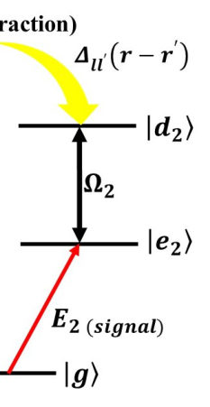
<figcaption class="paper-figure-caption"><b>Fig 1.</b> FIG. 1. EIT Dipole-Dipole Interaction Dressed State Diagram.</figcaption>
</figure>
<figure class="paper-figure-card">
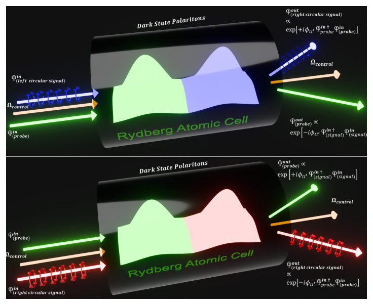
<figcaption class="paper-figure-caption"><b>Fig 2.</b> FIG. 2. Dipole-Dipole Polariton Interaction inside Rydberg atomic cell and subsequent phase generation. The left (right) polarization state of signal pulses have been shown in (a) blue (top) and in (b) red (bottom).</figcaption>
</figure>
<figure class="paper-figure-card">
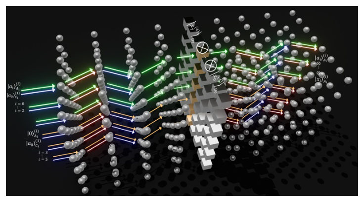
<figcaption class="paper-figure-caption"><b>Fig 3.</b> FIG. 3. Ensemble of cold alkali atoms (spheres), where each layer serving as a level on a bi-directional binary tree. The address probe laser, signal laser and the data probe laser has been represented by yellow arrows, blue/red arrows for either left/right polarization states and orange arrows. The memory locations, represented by the square arrays.</figcaption>
</figure>
<figure class="paper-figure-card">
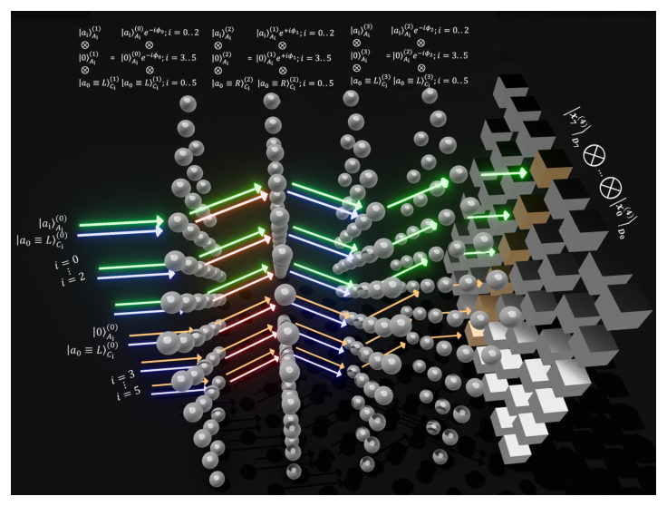
<figcaption class="paper-figure-caption"><b>Fig 4.</b> FIG. 4. Routing scheme of the quantum walkers, represented by the address and data probe pulses, visualized. Here, shown the routing of probe pulses by ensuing phase generation of ±iϕn, based on the left (blue) and right (red) polarization state of signal pulses.</figcaption>
</figure>
<figure class="paper-figure-card">

<figcaption class="paper-figure-caption"><b>Fig 5.</b> FIG. 5. CNOT operations to copy the address information at each level of the binary tree onto the encoded polarization states of the signal laser pulses.</figcaption>
</figure>
</div>

<p><strong>Summary.</strong> This paper proposes a novel theoretical architecture for building a quantum random access memory (qRAM) using Rydberg-blockaded atomic ensembles operating via Electromagnetically Induced Transparency (EIT). It achieves high-fidelity quantum operations by exploiting strong dipole-dipole interactions to generate conditional phase shifts. The resulting scheme offers a scalable, O(n) approach to photonic qRAM by implementing quantum random walks through a binary tree structure.</p>
<p><strong>Why it may be interesting.</strong> This work is highly relevant as it merges advanced concepts from quantum optics (EIT, Rydberg interactions) with quantum information primitives (qRAM, quantum random walks), providing a concrete, hardware-agnostic blueprint for quantum computation.</p>
<details>
<summary>Detailed structure</summary>
<p><strong>Main problem.</strong> The paper addresses the challenge of implementing a Quantum Random Access Memory (qRAM) architecture.</p>
<p><strong>Main result.</strong> A scalable and coherent qRAM scheme is proposed that achieves an access complexity of O(n) by utilizing quantum random walks within an atomic ensemble.</p>
<p><strong>Method.</strong> The scheme relies on generating conditional phase shifts via cross-phase modulation in multiple Electromagnetically Induced Transparency (EIT) systems.</p>
<p><strong>Model / system.</strong> The physical platform is a Rydberg-blockaded atomic ensemble using multilevel EIT systems configured in a binary tree structure. Qubits are encoded in probe fields and mapped onto metastable atomic states.</p>
<p><strong>Key observables.</strong> The accumulated phase $\phi_{ll'} \propto 	ilde{n}_{l'}$ acquired by the address walker, which dictates state-selective routing outcomes.</p>
<p><strong>Important parameters / regimes.</strong> The operational complexity is reduced to O(n); key parameters include dipole moments ($\mathcal{P}_{dl}, \mathcal{P}_{dp}$) and propagation time limits.</p>
<p><strong>Assumptions / limitations.</strong> The derivation assumes the dipole moment term for the address probe walker is much smaller than that of the signal probe walker ($C_{ll} < C_{ll'}$).</p>
<p><strong>Figures summary.</strong> Figures illustrate the EIT interaction diagram, the binary tree structure for routing, the quantum walker phase generation mechanism, and the process for state mapping and retrieval.</p>
<p><strong>Paper structure.</strong> The paper develops the architecture by first establishing the physical basis (EIT/Rydberg interactions), then detailing the quantum random walk mechanism for routing and querying, and finally demonstrating the full state transfer and retrieval process satisfying the QRAM condition.</p>
</details>
<details>
<summary>Abstract</summary>
<p>We propose a novel theoretical architecture for implementing a quantum random access memory (qRAM) based on quantum random walks in a Rydberg blockaded atomic ensemble utilizing multilevel Electromagnetically Induced Transparency (EIT). Unlike previous approaches that rely on geometric phase gates in solid-state or trapped ion systems, our scheme harnesses the strong, coherent dipole dipole interactions between Rydberg atoms to achieve high-fidelity phase control of photonic qubits without the need for cryogenic temperatures. By generating conditional phase shifts through cross-phase modulation in multiple lambda-type EIT systems, we realize the controlled unitary operations requisite for an efficient qRAM. In the proposed architecture, Zeeman splitting is used to engineer a set of parallel lambda systems in a cavity, where pairs of magnetic sublevels of the ground state are coupled to highly excited Rydberg states via circularly polarized laser pulses. These Rydberg excited EIT systems serve as the elementary phase gates that form the nodes of a binary tree enabling quantum random walking. Address and data qubits are encoded into distinct probe fields and coherently mapped into the metastable atomic states, where their interactions within the EIT medium generate conditional phases required for state-selective routing. The system uses $n+m$ layers of cold alkali atoms to form an $n$-level binary tree of Rydberg nodes connected to $2^n$ cavity-trapped memory atoms, operated by $n+m$ laser pulses acting as quantum walkers and address units. Our scheme offers a scalable, reducing operational complexity to $\mathcal{O}(n)$ and highly coherent pathway toward photonic qRAM, exploiting collective Rydberg interactions to realize programmable, parallel entangling operations in an atomic ensemble.</p>
</details>
<p><sub><a href="#top">↑ back to top</a></sub></p>

<p><a id="paper-2609.11887"></a></p>
<h3 id="si-traceable-calibration-and-performance-benchmarking-of-a-terahertz-photomixer-transmitter-receiver-system-using-a-rydberg-atomic-sensor"><a href="http://arxiv.org/abs/2609.11887v1">SI-Traceable Calibration and Performance Benchmarking of a Terahertz Photomixer Transmitter-Receiver System Using a Rydberg Atomic Sensor</a></h3>
<p><strong>Authors:</strong> Alisher Duspayev, Kaitlin R. Moore, Georg Raithel, David A. Anderson<br>
<strong>Type:</strong> experiment · <strong>Category:</strong> other · <strong>PDF:</strong> <a href="https://arxiv.org/pdf/2609.11887v1">https://arxiv.org/pdf/2609.11887v1</a><br>
<strong>Analysis basis:</strong> full PDF text, analyzed in chunks
<strong>Topic relevance:</strong> <code>quantum optics experiment</code> <strong>3/5</strong> · <code>Rydberg arrays</code> <strong>2/5</strong> · <code>analog quantum simulation</code> <strong>2/5</strong> · <code>quantum measurements</code> <strong>2/5</strong></p>
<div class="figure-strip-hint">↔ Scroll figures horizontally</div>
<div class="paper-figures-scroll">
<figure class="paper-figure-card">

<figcaption class="paper-figure-caption"><b>Fig 1.</b> FIG. 1. (a) Sketch of the experimental setup (not to scale). Tx: transmitter; Rx: receiver; OAPM: off-axis parabolic mir- ror; DM: dichoric mirror; APD: avalanche photodetector. (b) Single-atom energy-level diagram (not to scale) outlining uti- lized Cs states.</figcaption>
</figure>
<figure class="paper-figure-card">

<figcaption class="paper-figure-caption"><b>Fig 2.</b> FIG. 2. Experimental EIT maps as a function of coupler laser detuning ∆C and THz field frequency νT Hz for V0 = -0.3 V (a) and -0.7 V (b). The THz field magnitudes, ET Hz, extracted from the AT splittings at the |17D5/2⟩→|18P3/2⟩resonance using Eq. 3, are indicated.</figcaption>
</figure>
<figure class="paper-figure-card">

<figcaption class="paper-figure-caption"><b>Fig 3.</b> FIG. 3. Calibration of the THz transmitter-receiver system in dc mode. Data points are the THz electric field corrected for the transmission through the vapor cell wall, E(0) T Hz, vs bias voltage V0 of the photomixer Tx. The linear fits shown (solid and dashed curves) and the indicated fitted slopes are based on Eq. 4.</figcaption>
</figure>
<figure class="paper-figure-card">

<figcaption class="paper-figure-caption"><b>Fig 4.</b> FIG. 4. Calibration of the THz transmitter-receiver system in its native modulation mode. Data points are the THz- induced current reading of the photomixer receiver, I(0) T Hz, as a function of the transmitter modulation amplitude, Vmod, for fixed V0 = -0.4 V and with the vapor cell removed. Solid curve is a linear-fit result using Eq. 6. The obtained fitted slope is indicated.</figcaption>
</figure>
</div>

<p><strong>Summary.</strong> This paper presents a novel method to achieve SI-traceable calibration for THz photomixer systems by utilizing Rydberg atomic sensors. By measuring the Autler-Townes splitting in a Cesium vapor, the absolute THz electric field is determined, which is then used to calibrate both the transmitter power and the receiver's sensitivity. This establishes a crucial, absolute field benchmark for state-of-the-art THz detection technology.</p>
<p><strong>Why it may be interesting.</strong> This work directly applies advanced concepts from atomic physics (Rydberg atoms, EIT, AT effect) to solve a critical engineering problem in quantum optics and THz detection, providing a quantum-enhanced metrology tool.</p>
<details>
<summary>Detailed structure</summary>
<p><strong>Main problem.</strong> Accurate calibration and performance benchmarking of Terahertz (THz) photomixer transmitter-receiver systems is challenging due to the lack of SI-traceable THz field sensors.</p>
<p><strong>Main result.</strong> The study demonstrates that Rydberg atomic sensors provide a practical, SI-traceable method for calibrating THz transmitter and receiver systems, establishing an absolute field benchmark.</p>
<p><strong>Method.</strong> The THz electric field is extracted by measuring the Autler-Townes (AT) splitting in a Cesium Rydberg transition, which calibrates the transmitter, and simultaneously calibrates the receiver's responsivity.</p>
<p><strong>Model / system.</strong> The experiment uses a THz photomixer transmitter-receiver system coupled with a Rydberg atomic sensor based on the Cesium $17D_{5/2} 
ightarrow 18P_{3/2}$ transition in a thermal atomic vapor.</p>
<p><strong>Key observables.</strong> THz electric field strength ($E_{	ext{THz}}$), Rabi frequency ($\Omega$), AT-split lines, and the receiver's current-to-field responsivity ($\gamma$).</p>
<p><strong>Important parameters / regimes.</strong> THz frequency near 204 GHz, Rydberg transition parameters, and noise floor comparisons (e.g., $ ext{BBR}$ noise vs. atomic sensitivity).</p>
<p><strong>Assumptions / limitations.</strong> The photomixer receiver is assumed to operate above its Black-Body Background Radiation (BBR) noise floor.</p>
<p><strong>Figures summary.</strong> Figures illustrate the experimental setup, the single-atom energy-level diagram, and maps showing the atomic spectrum (EIT) as a function of transmitter bias voltage ($V_0$) under the influence of the THz field.</p>
<p><strong>Paper structure.</strong> The paper introduces the problem of THz calibration, details the methodology using Rydberg sensing to extract $E_{	ext{THz}}$ via AT effects, and then applies this calibration to benchmark both the transmitter and receiver performance against fundamental noise limits.</p>
</details>
<details>
<summary>Abstract</summary>
<p>Accurate calibration of electromagnetic field strength in the terahertz (THz) frequency regime remains challenging due to the limited availability of SI-traceable field sensors. Here we demonstrate SI-traceable calibration and performance benchmarking of a commercial photomixer-based THz transmitter-receiver system operating near 204 GHz using Rydberg electric-field sensing in a thermal atomic vapor. The THz electric field is extracted from the Autler-Townes (AT) effect of the cesium $17D_{5/2}\rightarrow18P_{3/2}$ Rydberg transition. We measure the strength of AT-split lines as a function of THz detuning from resonance to find the on-resonant Rabi frequency, which, together with atomic transition dipole moments and fundamental constants, yields the THz electric field. The atomically measured field calibrates the photomixer transmitter field and power, while simultaneous measurements with a commercial InGaAs photomixer receiver calibrate the receiver's current-to-field responsivity and convert its current-noise floor into an absolute noise-equivalent THz electric-field sensitivity. Our study demonstrates that Rydberg atomic sensors provide a practical method for SI-traceable calibration and benchmarking of THz transmitter and receiver systems, and for the establishment of a quantitative link between state-of-the-art and absolute atom-based THz sensors.</p>
</details>
<p><sub><a href="#top">↑ back to top</a></sub></p>

<p><a id="paper-2609.11071"></a></p>
<h3 id="coherent-floquet-quantum-reservoirs-for-molecular-property-prediction"><a href="http://arxiv.org/abs/2609.11071v1">Coherent Floquet quantum reservoirs for molecular property prediction</a></h3>
<p><strong>Authors:</strong> Luofei Wang, Da Zhang, Congren Wang, Yiming Li, Yuxiao Yang, Xuan Zhang, Xuefeng Cui, Zhang-Qi Yin<br>
<strong>Type:</strong> both · <strong>Category:</strong> disordered systems and neural networks · <strong>PDF:</strong> <a href="https://arxiv.org/pdf/2609.11071v1">https://arxiv.org/pdf/2609.11071v1</a><br>
<strong>Analysis basis:</strong> full PDF text, analyzed in chunks
<strong>Topic relevance:</strong> <code>driven-dissipative phase transition</code> <strong>3/5</strong> · <code>methods for driven-dissipative</code> <strong>3/5</strong> · <code>analog quantum simulation</code> <strong>1/5</strong> · <code>quantum measurements</code> <strong>1/5</strong></p>
<div class="figure-strip-hint">↔ Scroll figures horizontally</div>
<div class="paper-figures-scroll">
<figure class="paper-figure-card">

<figcaption class="paper-figure-caption"><b>Fig 1.</b> FIG. 1. Molecular graph classification and electronic-gap forecasting with a fixed DTC-QRC. (a) BFS graph events describe local atoms, bonds, rings, and traversal depth for BACE inhibitor-activity and BBBP permeability classification (Q = 12). Ethene surface-hopping frames supply interatomic distances and radial velocities for future-gap prediction (Q = 15). (b) One input rotation precedes three Floquet cycles, each ordered as UX(g) followed by UJ,h(W). The global channel Rp(ρ) = (1 −p)ρ + p|0Q⟩⟨0Q| resets all qubits together with probability p. Graph processing includes reset after the last token (t ≤T); trajectory processing resets only between frames (t &lt; T). (c) Final-state sampling...</figcaption>
</figure>
<figure class="paper-figure-card">

<figcaption class="paper-figure-caption"><b>Fig 2.</b> FIG. 2. Same-T graph-stream application test. (a) BACE and (b) BBBP at Q = 12 under the local chemical-prior to- ken protocol and RBF-SVR decoding. Lines and bands show six paired-seed means and sample standard deviations. The orange background marks the long-prefix region T &gt; 20.</figcaption>
</figure>
<figure class="paper-figure-card">

<figcaption class="paper-figure-caption"><b>Fig 3.</b> FIG. 3. Validation-selected SHNITSEL A01 application test at the common Q = 15, T = 20 interface. Bars report test MAE for dissipative DTC-QRC, closed DTC-QRC, and the matched ESN using final-state Z + ZZ sampling and RBF- SVR. Error bars show six-seed sample standard deviations.</figcaption>
</figure>
<figure class="paper-figure-card">

<figcaption class="paper-figure-caption"><b>Fig 4.</b> FIG. 4. Reset-probability response across both molecular interfaces. (a,d) BACE and BBBP test AUC at Q = 12 for four fixed event lengths on the original measured 0 ≤p ≤0.8 axis; lines and bands show six-seed means and sample standard deviations, and the vertical dashed line marks the prespecified graph value p = 0.10. (b,c) SHNITSEL A01 with RBF-SVR and final-state or TM3 sampling. (e,f) The same targets with linear decoding. Hopping curves use the uniform p = 0, 0.05, . . . , 1 scan and report held-out trajectory MAE at p minus paired closed-DTC-QRC MAE at p = 0; shading gives crossed seed-by-trajectory 95% intervals.</figcaption>
</figure>
<figure class="paper-figure-card">

<figcaption class="paper-figure-caption"><b>Fig 5.</b> FIG. 5. Floquet-drive dependence of ethene gap prediction with RBF-SVR and final-state readout. (a)–(d) The 1-, 5-, and 10-fs gaps and the minimum gap in the next 5 fs. Each panel shows p = 0, 0.2, . . . , 1 at Q = 15, T = 20, L = 3, and W = 0.50. Lines and bands give means and sample standard deviations across six reservoir seeds on one fixed whole-trajectory split. The background labels mark literature reference regions: nontime-crystalline (NTC), thermal, and DTC, with divisions at g = 0.22 and 0.84 [25, 37].</figcaption>
</figure>
</div>

<p><strong>Summary.</strong> This paper introduces a novel Quantum Reservoir Computing (DTC-QRC) architecture for predicting molecular properties from structural and dynamical data. It uses coherent Floquet evolution on quantum circuits to process sequential molecular information, outperforming classical benchmarks like ESNs. The framework establishes a unified platform for quantum-enhanced molecular screening.</p>
<p><strong>Why it may be interesting.</strong> This work directly bridges quantum dynamics (Floquet evolution, DTCs) with machine learning for chemistry, providing a quantum-enhanced framework for molecular property prediction, which is highly relevant to AMO physics applications.</p>
<details>
<summary>Detailed structure</summary>
<p><strong>Main problem.</strong> The paper aims to predict complex molecular properties, such as inhibitor-activity or electronic gaps, using quantum machine learning techniques.</p>
<p><strong>Main result.</strong> The proposed DTC-QRC architecture outperforms traditional Echo State Networks (ESN) on challenging graph classification and molecular forecasting tasks.</p>
<p><strong>Method.</strong> It employs a Discrete Time Crystal (DTC)-based Quantum Reservoir Computing (DTC-QRC) framework, using Floquet evolution to process sequential structural or dynamical molecular data.</p>
<p><strong>Model / system.</strong> The model uses a DTC-QRC architecture where the quantum state evolves via Floquet cycles governed by local Hamiltonians. Inputs can be structural (SMILES via BFS) or dynamical (surface-hopping trajectories), and the process includes a controlled reset mechanism.</p>
<p><strong>Key observables.</strong> Feature vectors derived from end-point measurements (e.g., $Z+ZZ$ observables) are used as inputs for classical decoders to predict properties.</p>
<p><strong>Important parameters / regimes.</strong> Key parameters include the number of qubits ($Q=12$ or $Q=15$), the reset probability ($p$), and the Floquet cycle length ($L$).</p>
<p><strong>Assumptions / limitations.</strong> The reservoir parameters are fixed during the training of the classical readout decoder, and the process assumes that the history can be compressed into a fixed-dimension feature vector.</p>
<p><strong>Figures summary.</strong> Figure 1 illustrates the two main interfaces: graph event processing via BFS and dynamical trajectory processing, both involving Floquet evolution and state sampling.</p>
<p><strong>Paper structure.</strong> The paper introduces the DTC-QRC framework, details its application to molecular property prediction using both graph and time-resolved data, compares its performance against ESNs, and validates its robustness on superconducting quantum hardware.</p>
</details>
<details>
<summary>Abstract</summary>
<p>Quantum reservoir computing (QRC) uses quantum dynamics to represent input histories for prediction through a trained classical readout. Discrete time crystals (DTCs) exhibit robust subharmonic responses under periodic driving, and previous work has used their dynamics to construct DTC-QRC. Here we construct a DTC-based reservoir architecture to predict molecular properties from structural and dynamical observations. Coherent Floquet evolution processes local molecular graph events and surface-hopping frames, while controlled reset regulates the contribution of earlier inputs. Measurements at the end of each input sequence yield a feature vector of fixed dimension. Trained classical decoders use this vector for inhibitor-activity and blood--brain-barrier permeability classification and electronic-gap forecasting, while the reservoir parameters remain fixed during training. With matched input lengths and output widths, DTC-QRC outperforms echo-state networks on long-prefix graph classification and the studied ethene gap forecasting tasks. Dephasing lowers performance in both applications, consistent with a role for coherent propagation. Experiments on the Quafu superconducting quantum cloud platform show that pair observables retain task information under device noise. The architecture provides a common framework for molecular screening and time-resolved property prediction using quantum reservoir computing.</p>
</details>
<p><sub><a href="#top">↑ back to top</a></sub></p>

<p><a id="paper-2609.11568"></a></p>
<h3 id="finite-time-effects-in-periodically-kicked-systems"><a href="http://arxiv.org/abs/2609.11568v1">Finite-time effects in periodically kicked systems</a></h3>
<p><strong>Authors:</strong> F. Revuelta, R. Chacón, F. Borondo<br>
<strong>Type:</strong> theory · <strong>Category:</strong> other · <strong>PDF:</strong> <a href="https://arxiv.org/pdf/2609.11568v1">https://arxiv.org/pdf/2609.11568v1</a><br>
<strong>Analysis basis:</strong> full PDF text, analyzed in chunks
<strong>Topic relevance:</strong> <code>analog quantum simulation</code> <strong>3/5</strong> · <code>Frenkel-Kontorova</code> <strong>1/5</strong> · <code>driven-dissipative phase transition</code> <strong>1/5</strong> · <code>methods for driven-dissipative</code> <strong>1/5</strong> · <code>non-equilibrium universality</code> <strong>1/5</strong> · <code>scars &amp; prethermalization</code> <strong>1/5</strong></p>
<div class="figure-strip-hint">↔ Scroll figures horizontally</div>
<div class="paper-figures-scroll">
<figure class="paper-figure-card">

<figcaption class="paper-figure-caption"><b>Fig 1.</b> Figure 2. Chaotic layer width in the F −m plane [cf. Eq. (6)] for ˜T = 1. Sections of the parameter chaotic layer width corresponding to the values indicated by the dashed lines (F = 20, 40, 60) are shown in Fig. 3(d).</figcaption>
</figure>
<figure class="paper-figure-card">

<figcaption class="paper-figure-caption"><b>Fig 2.</b> Figure 1. Schematic illustration of the function D(˜t; 1, m) [cf. Eq. (2)] in the limiting case m →1 for two instances of amplitudes K1 ,K2, and periods T1, T2, respectively, such that the impulse transmitted per unit period is the same. (b) Modulation D(˜t; 1, m) [cf. Eq. (2)] for three val- ues of the shape parameter: m = 0 (dashed-dotted green line), m = 0.5 (dashed blue line), and m = 0.9 (solid red line). The shaded areas equal the impulse transmitted in each case [cf. Eq. (4)]. Inset: Effective modulation ampli- tude ∆D(m) = max[D(˜t; ˜T, m)] −min[D(˜t; ˜T, m)] (blue solid line), and width σRMS [cf. Eq. (3)] of the pulses for ˜T = 1 (dashed red line) and ˜T = 2 (dashed-dotted red...</figcaption>
</figure>
<figure class="paper-figure-card">

<figcaption class="paper-figure-caption"><b>Fig 3.</b> Figure 4. Comparison between the strengths of dynamical localization and chaos for F = 5 in the parameter plane m−T. (a) Difference between the classical and quantum momentum dispersions ∆pC−Q = ∆pC −∆pQ [Eq. (11)]. (b) Chaotic layer width [Eq. (6)]. (c) ∆pC−Q vs m for: T = 1 (blue), 3 (red), and 4 (orange) [solid lines, also shown in (a)], and chaotic layer width [Eq. (6)] [dashed lines, also shown in (b)].</figcaption>
</figure>
<figure class="paper-figure-card">

<figcaption class="paper-figure-caption"><b>Fig 4.</b> Figure 3. Comparison between the strengths of dynamical localization and chaos for T = 1 in the parameter plane m − F. (a) Classical momentum dispersion ∆pC, (b) quantum momentum dispersion ∆pQ given by Eq. (2), and (c) their difference ∆pC−Q = ∆pC −∆pQ [Eq. (11)]. (d) Sections of ∆pC−Q for three values of the modulation amplitude: F = 20, 40, 60 [solid lines, also shown in (c)] and chaotic layer width [Eq. (6)] [dashed lines, also shown as in Fig. 2].</figcaption>
</figure>
<figure class="paper-figure-card">

<figcaption class="paper-figure-caption"><b>Fig 5.</b> Figure 5. Comparison between the strengths of dynamical localization and chaos in the parameter plane T −F. The difference between the classical and quantum momentum dis- persions ∆pC−Q = ∆pC −∆pQ corresponds to (a) m = 0.9, and (b) m = 0.99999. (c) Chaotic layer width [Eq. (6)] for m = 0.99999. (d) Difference ∆pC−Q for m = 0.99999 and chaotic layer width as a function of the period for four values of the amplitude [cf. vertical lines in (b) and (c)].</figcaption>
</figure>
</div>

<p><strong>Summary.</strong> This paper explores how the finite duration and specific waveform of periodic modulation affect quantum dynamics in ultracold atoms. By analyzing the system's response, the authors demonstrate that these finite-time effects are critical, leading to a measurable enhancement of dynamical localization. The findings establish a pathway to optimize experimental control by identifying optimal modulation periods.</p>
<p><strong>Why it may be interesting.</strong> This work directly addresses non-adiabatic effects in periodically driven quantum systems, which is highly relevant for controlling quantum dynamics in cold atom experiments and quantum simulation platforms.</p>
<details>
<summary>Detailed structure</summary>
<p><strong>Main problem.</strong> The study investigates finite-time effects in periodically kicked quantum systems, specifically analyzing how these effects modify dynamical localization (DL).</p>
<p><strong>Main result.</strong> Finite-time effects are crucial, as they significantly enhance dynamical localization beyond what the standard delta-kicked-rotor model predicts, and an optimal modulation period exists to maximize this enhancement.</p>
<p><strong>Method.</strong> The authors analyze the system by varying the modulation waveform and duration using a shape parameter, comparing quantum and classical momentum dispersions.</p>
<p><strong>Model / system.</strong> The system models ultracold atomic gases in an optical lattice subjected to time-dependent modulation, described by a Hamiltonian involving Jacobi elliptic functions.</p>
<p><strong>Key observables.</strong> Dynamical Localization (DL), the difference between classical and quantum momentum dispersion ($\Delta p_{C-Q}$), and the chaotic layer width.</p>
<p><strong>Important parameters / regimes.</strong> Modulation amplitude ($F$), period ($   ilde{T}$), and the shape parameter ($m$), which controls the waveform from static to pulsed.</p>
<p><strong>Assumptions / limitations.</strong> The model maintains a constant transmitted impulse per period while varying the waveform via the shape parameter $m$.</p>
<p><strong>Figures summary.</strong> Figures illustrate the time series of the modulation function for different $m$ values, and show the dependence of the chaotic layer width and $\Delta p_{C-Q}$ on parameters like $F$, $m$, and $T$.</p>
<p><strong>Paper structure.</strong> The paper establishes the model using a time-dependent Hamiltonian, analyzes the impact of the shape parameter $m$ to transition between integrable and kicked regimes, and then quantitatively compares quantum and classical dynamics to map out the conditions for enhanced DL.</p>
</details>
<details>
<summary>Abstract</summary>
<p>In this work, we study finite-time effects in ultracold atomic systems by considering time-dependent modulations with variable waveforms and durations. These two characteristics can be controlled by adjusting only a single parameter. For arbitrarily short pulses, our model recovers the paradigmatic kicked rotor while maintaining the impulse transmitted per period and unit amplitude constant. Furthermore, we demonstrate that finite-time effects have a profound impact on dynamical localization, a result that cannot be captured by the δ-kicked-rotor model. Through a detailed analysis of the effects of different modulation amplitudes, periods, and waveforms, we identify the conditions for which dynamical localization is significantly enhanced. We show that the strength of dynamical localization increases sharply as the system approaches the δ-kicked-rotor limiting case. Moreover, we establish the existence of an optimal value of the period that maximizes dynamical localization for given values of the amplitude and shape parameter.</p>
</details>
<p><sub><a href="#top">↑ back to top</a></sub></p>

<p><a id="paper-2609.11868"></a></p>
<h3 id="computational-framework-for-quantum-state-tomography-of-spin-ensembles"><a href="http://arxiv.org/abs/2609.11868v1">Computational framework for quantum state tomography of spin ensembles</a></h3>
<p><strong>Authors:</strong> Jiwoo Seo, Vesna F. Mitrović<br>
<strong>Type:</strong> both · <strong>Category:</strong> quantum information and computing · <strong>PDF:</strong> <a href="https://arxiv.org/pdf/2609.11868v1">https://arxiv.org/pdf/2609.11868v1</a><br>
<strong>Analysis basis:</strong> full PDF text, analyzed in chunks
<strong>Topic relevance:</strong> <code>QC/QI experiment</code> <strong>3/5</strong> · <code>quantum measurements</code> <strong>3/5</strong> · <code>methods for driven-dissipative</code> <strong>1/5</strong></p>
<div class="figure-strip-hint">↔ Scroll figures horizontally</div>
<div class="paper-figures-scroll">
<figure class="paper-figure-card">

<figcaption class="paper-figure-caption"><b>Fig 1.</b> Figure 1: Minimal set of 9 spectra sufficient to determine all 15 non-identity expansion coefficients of the two-qubit density matrix. Each spectrum displays a doublet with peaks labeled L (left) and R (right). The sum (L+R) and difference (L−R) of peak intensities, extracted from both the real and imaginary parts, are mapped to specific product operator coefficients as indicated. Together, these 9 spectra span the complete set of coefficients required for full state reconstruction.</figcaption>
</figure>
<figure class="paper-figure-card">

<figcaption class="paper-figure-caption"><b>Fig 2.</b> Figure 2: Theoretical density matrix for the |00⟩computational basis state, visualized as a 3D bar chart. The single non-zero diagonal element at |00⟩⟨00| confirms the pure state ˆρ = |00⟩⟨00|.</figcaption>
</figure>
<figure class="paper-figure-card">

<figcaption class="paper-figure-caption"><b>Fig 3.</b> Figure 3: Q1 readout channel spectra for all 14 tomographic measurements (7 readout pulses × 2 real/imaginary parts). Red vertical lines mark integration centers; orange shaded regions indicate integration windows of width w = 4 Hz. Each spectrum displays the characteristic doublet separated by J ≈22 Hz.</figcaption>
</figure>
<figure class="paper-figure-card">

<figcaption class="paper-figure-caption"><b>Fig 4.</b> Figure 4: Q2 readout channel spectra for all 14 tomographic measurements, with indepen- dently adjusted frequency offset. The Q2 channel requires a different offset than Q1 due to slight chemical shift differences between the two 31P nuclei.</figcaption>
</figure>
<figure class="paper-figure-card">

<figcaption class="paper-figure-caption"><b>Fig 5.</b> Figure 5: Comparison of the density matrix reconstruction from different integration meth- ods. a. Density matrix reconstructed using the peak height method (F = 0.980). While the dominant |00⟩⟨00| element is correctly identified, minor deviations are visible in off- diagonal and subdominant diagonal elements. b. Density matrix from fixed-parameter Simpson integration (F = 0.980). The result is similar to the peak height method, with small differences arising from the noise-averaging effect of finite integration windows. c. Density matrix from optimized integration (F = 0.998). The systematic parameter op- timization significantly improves reconstruction accuracy, yielding a density matrix...</figcaption>
</figure>
</div>

<p><strong>Summary.</strong> This paper introduces Tomography-NMR, an open-source Python package designed to reconstruct quantum density matrices from raw NMR spectroscopic data. It details a complete analysis pipeline that transforms time-domain signals into spectral coefficients using the product operator formalism. The tool achieves high reconstruction fidelities for two-qubit systems, providing a transparent and reproducible methodology for quantum state characterization.</p>
<p><strong>Why it may be interesting.</strong> This work provides a crucial, reproducible, and open-source tool for characterizing quantum states experimentally, which is vital for validating theoretical models in quantum information science.</p>
<details>
<summary>Detailed structure</summary>
<p><strong>Main problem.</strong> The primary challenge is bridging the gap between established quantum state tomography theory and the practical, transparent extraction of density matrices from raw spectroscopic measurement data.</p>
<p><strong>Main result.</strong> The authors developed Tomography-NMR, an open-source Python package that achieves high reconstruction fidelities (up to 99.5%) for two-qubit states measured via NMR.</p>
<p><strong>Method.</strong> The package implements a full pipeline: Fourier transforming time-domain NMR signals to frequency spectra, mapping peak intensities to product operator expansion coefficients, and using three integration methods to reconstruct the density matrix.</p>
<p><strong>Model / system.</strong> The system is a two-qubit spin ensemble, experimentally realized using Nuclear Magnetic Resonance (NMR) spectroscopy of coupled protons ($^{31}	ext{P}$). The state is reconstructed using the product operator formalism.</p>
<p><strong>Key observables.</strong> Density matrix ($
ho$), spectral peak intensities, and reconstruction fidelity (quantified by Fortunato's metric).</p>
<p><strong>Important parameters / regimes.</strong> The system is currently limited to two qubits; extension to higher qubits requires developing spectral deconvolution methods.</p>
<p><strong>Assumptions / limitations.</strong> The method assumes the ability to measure a tomographically complete set of spectral observables, and the optimized routine can be computationally intensive.</p>
<p><strong>Figures summary.</strong> Figures illustrate the characteristic doublet structure in Q1 and Q2 readout spectra and compare the resulting density matrices reconstructed using the three different integration methods.</p>
<p><strong>Paper structure.</strong> The paper introduces the Tomography-NMR package, details the product operator formalism for two-qubit states, describes the three distinct data processing pipelines (peak height, fixed integration, optimized grid search), and validates the results on a benchmark set of 20 states.</p>
</details>
<details>
<summary>Abstract</summary>
<p>We present Tomography-NMR, an open-source Python package that reconstructs quantum density matrices from spectroscopic measurement data. The package implements a complete analysis pipeline for two-qubit quantum state tomography based on the product operator formalism: raw time-domain signals are Fourier-transformed into frequency-domain spectra, spectral peak intensities are mapped to expansion coefficients of the density matrix, and the full quantum state is reconstructed. Three integration methods are provided for different use cases: direct peak height measurement and fixed-parameter numerical integration require no theoretical reference and are suited to unknown states, achieving fidelities of approximately 98\% on a benchmark set of known states, while a systematic parameter optimization against a known target state achieves reconstruction fidelities exceeding 99\% for the same benchmark states. While the detailed theoretical framework for quantum state tomography is well established, the practical procedures for extracting density matrices from experimental spectra are often inadequately documented in the literature and obscured within proprietary software. This package addresses that gap by providing a fully transparent, reproducible implementation of every analysis step, from spectral preprocessing to density matrix visualization. The software has been validated on experimentally prepared two-qubit states measured via nuclear magnetic resonance (NMR) spectroscopy of coupled $^{31}$P nuclei. Average reconstruction fidelities range from 0.975 to 0.995 across a benchmark set of 20 two-qubit states, including the computational basis states, Bell states, and the outputs of three fundamental quantum gates (CNOT, H, and T). Although developed for NMR, the modular architecture facilitates adaptation to other spectroscopic platforms and alternative measurement protocols.</p>
</details>
<p><sub><a href="#top">↑ back to top</a></sub></p>

<p><a id="paper-2609.11034"></a></p>
<h3 id="engineered-two-photon-dissipative-confinement-of-a-kerr-cat-qubit-using-sisis-quantum-circuit-refrigerator"><a href="http://arxiv.org/abs/2609.11034v1">Engineered two-photon dissipative confinement of a Kerr-cat qubit using SISIS quantum circuit refrigerator</a></h3>
<p><strong>Authors:</strong> Shumpei Masuda, Tsuyoshi Yamamoto, Shuji Nakamura, Daichi Sugiyama, Akiyoshi Tomonaga<br>
<strong>Type:</strong> theory · <strong>Category:</strong> quantum information and computing · <strong>PDF:</strong> <a href="https://arxiv.org/pdf/2609.11034v1">https://arxiv.org/pdf/2609.11034v1</a><br>
<strong>Analysis basis:</strong> full PDF text, analyzed in chunks
<strong>Topic relevance:</strong> <code>methods for driven-dissipative</code> <strong>3/5</strong> · <code>Keldysh / 2PI / non-Gaussian methods</code> <strong>1/5</strong> · <code>correlated / nonlocal dissipation</code> <strong>1/5</strong> · <code>driven-dissipative phase transition</code> <strong>1/5</strong> · <code>quantum measurements</code> <strong>1/5</strong></p>
<div class="figure-strip-hint">↔ Scroll figures horizontally</div>
<div class="paper-figures-scroll">
<figure class="paper-figure-card">

<figcaption class="paper-figure-caption"><b>Fig 1.</b> FIG. 1. (A) Schematic of a SISIS-junction-based QCR capac- itively coupled to a KPO. A bias voltage VB is applied across the SISIS junction. Horizontal arrows indicate quasiparticle tunneling processes. (B) Energy diagrams for photon-assisted quasiparticle tunneling in a SIS junction in a bias regime where two-photon absorption remains allowed, whereas other photon-assisted tunneling processes are suppressed. The black solid curves represent the superconducting density of states. Colored and shaded regions indicate occupied and unoccupied states, respectively. The arrows indicate two- photon absorption (green), single-photon absorption (blue), single-photon emission (red), and two-photon...</figcaption>
</figure>
<figure class="paper-figure-card">

<figcaption class="paper-figure-caption"><b>Fig 2.</b> FIG. 2. Circuit diagram used in the theoretical analysis of the SISIS-based QCR. A KPO (shaded area) is capacitively cou- pled (Cc) to a superconducting island (blue lines). One SIS junction is treated explicitly through the tunnel-junction pa- rameters (RT , Cj), while the second SIS junction is modeled as a capacitor whose capacitance is incorporated into the ef- fective island capacitance Cm following Ref. [44]. The voltage V is the bias voltage across the explicitly treated SIS junction (V = VB/2). The KPO is modeled by a capacitance C and a SQUID with Josephson energy EJ, driven by an external magnetic flux Φex(t).</figcaption>
</figure>
<figure class="paper-figure-card">

<figcaption class="paper-figure-caption"><b>Fig 3.</b> FIG. 4. ρc dependence of QCR-induced transition rates be- tween KPO eigenstates at eV/h = 82.8 GHz (≃eV (2) a /h) for α = 2. The color scheme and other parameters are the same as in Fig. 3.</figcaption>
</figure>
<figure class="paper-figure-card">

<figcaption class="paper-figure-caption"><b>Fig 4.</b> FIG. 3. Transition rates Γi→j [Eq. (7)] as functions of the normalized bias voltage eV/h for α = 2 and ρc = 0.01. Panel (A) shows the rates over a wide voltage range including the thresholds V (n) a (n = 1, 2, 3), while panel (B) presents an en- larged view around V (2) a , highlighting the deexcitation and phase-flip rates. Vertical dashed lines in panel (A) indicate the threshold voltages V (n) a associated with the onset of one-, two-, and three-photon absorption processes. The parame- ters are χ/2π = 10 MHz, ωc/2π = 7 GHz, ∆= 200 µeV, ∆KPO/2π = 0, RT = 50 kΩ, γD = 10−4, β/2π = 20 MHz, and TS = 100 mK, which are comparable to experimental val- ues [24, 42].</figcaption>
</figure>
<figure class="paper-figure-card">

<figcaption class="paper-figure-caption"><b>Fig 5.</b> FIG. 5. α dependence of relevant transition rates for a SISIS junction at eV/h = 82.8 GHz (≃eV (2) a /h) with ρc = 0.01 (A), in the two-photon-dominant regime, and for a SINIS junction at eV/h = 45 GHz (≃eV (1) a /h) with ρc = 0.01 (B), in the single-photon-dominant regime. The color scheme and other parameters are the same as in Fig. 3.</figcaption>
</figure>
</div>

<p><strong>Summary.</strong> This paper proposes using a Superconductor-Insulator-Superconductor-Insulator-Superconductor (SISIS) junction as a Quantum Circuit Refrigerator (QCR) for Kerr-cat qubits. By tuning the bias voltage, the system can be engineered to favor two-photon absorption, which efficiently removes leakage errors while crucially suppressing the phase-flip errors common in other QCR designs. This offers a robust pathway for improving qubit coherence in superconducting quantum processors.</p>
<p><strong>Why it may be interesting.</strong> This work provides a detailed theoretical blueprint for engineering error mitigation in superconducting qubits by exploiting specific quantum tunneling mechanisms (two-photon vs. single-photon) within a superconducting circuit refrigerator.</p>
<details>
<summary>Detailed structure</summary>
<p><strong>Main problem.</strong> The paper addresses the challenge of mitigating leakage errors in Kerr-cat qubits caused by pure dephasing while simultaneously minimizing the increase in phase-flip errors induced by Quantum Circuit Refrigeration (QCR).</p>
<p><strong>Main result.</strong> A novel SISIS-based QCR operating in a two-photon absorption regime effectively suppresses dephasing-induced leakage while substantially reducing the detrimental phase-flip errors compared to conventional SINIS-based methods.</p>
<p><strong>Method.</strong> The authors derive the system dynamics using a master equation approach, calculating transition rates via Fermi's golden rule applied to quasiparticle tunneling processes.</p>
<p><strong>Model / system.</strong> The system models a Kerr-cat qubit (KPO) coupled to a superconducting island via a SISIS junction. The dynamics are governed by a Hamiltonian and analyzed through the evolution of the reduced density matrix.</p>
<p><strong>Key observables.</strong> Population of excited (leakage) states, population of $|\varphi_0
angle$, population of $|\varphi_\alpha
angle$, and the relative rates of phase-flip versus deexcitation transitions.</p>
<p><strong>Important parameters / regimes.</strong> The applied bias voltage ($V_B$), the tunnel resistance ($R_T$), and the ratio of two-photon to single-photon absorption rates.</p>
<p><strong>Assumptions / limitations.</strong> The analysis employs the Born–Markov approximation and treats quasiparticle tunneling perturbatively, assuming the superconducting density of states dictates the tunneling rates.</p>
<p><strong>Figures summary.</strong> Figures illustrate the energy level diagrams showing the suppression of single-photon processes in favor of two-photon processes. Time evolution plots compare state populations under varying tunnel resistances ($R_T$) for both SISIS and SINIS configurations.</p>
<p><strong>Paper structure.</strong> The paper first establishes the physical problem and the SISIS mechanism. It then develops the theoretical framework by deriving the master equation and calculating transition rates based on the junction structure. Finally, it analyzes the time evolution by simulating state populations under varying critical parameters like $R_T$.</p>
</details>
<details>
<summary>Abstract</summary>
<p>Kerr-cat qubits realized in periodically driven superconducting nonlinear resonators are a promising platform for quantum information processing with biased noise. Pure dephasing in such systems induces leakage out of the qubit subspace, motivating the use of quantum circuit refrigeration (QCR) to remove excess excitations. While conventional superconductor--insulator--normal-metal--insulator--superconductor (SINIS)-based QCRs can suppress leakage via single-photon absorption, they also enhance QCR-induced phase-flip errors. Here we investigate a QCR based on a superconductor--insulator--superconductor--insulator--superconductor (SISIS) junction coupled to a Kerr parametric oscillator (KPO). We show that a SISIS-based QCR can operate in a regime where single-photon processes are suppressed while two-photon absorption dominates. As a result, the proposed SISIS-based QCR achieves strong suppression of dephasing-induced leakage while substantially reducing the increase in phase-flip errors associated with QCR operation. These results demonstrate that the proposed SISIS-based QCR provides an effective approach for mitigating leakage while limiting QCR-induced phase-flip errors in Kerr-cat qubits.</p>
</details>
<p><sub><a href="#top">↑ back to top</a></sub></p>

<p><a id="paper-2609.11405"></a></p>
<h3 id="instabilities-in-self-consistent-diagrammatic-approaches-and-how-to-cure-them"><a href="http://arxiv.org/abs/2609.11405v1">Instabilities in self-consistent diagrammatic approaches and how to cure them</a></h3>
<p><strong>Authors:</strong> Marcel Gievers, Herbert Eßl, Stefan Rohshap, Anna Kauch, Alessandro Toschi<br>
<strong>Type:</strong> theory · <strong>Category:</strong> strongly correlated electrons · <strong>PDF:</strong> <a href="https://arxiv.org/pdf/2609.11405v1">https://arxiv.org/pdf/2609.11405v1</a><br>
<strong>Analysis basis:</strong> full PDF text, analyzed in chunks
<strong>Topic relevance:</strong> <code>Keldysh / 2PI / non-Gaussian methods</code> <strong>3/5</strong> · <code>methods for driven-dissipative</code> <strong>3/5</strong> · <code>quantum measurements</code> <strong>1/5</strong></p>
<div class="figure-strip-hint">↔ Scroll figures horizontally</div>
<div class="paper-figures-scroll">
<figure class="paper-figure-card">

<figcaption class="paper-figure-caption"><b>Fig 1.</b> Figure 1. Overview of the different iteration schemes. The boson-exchange (BE) equations (4)–(14), here illustrated diagram- matically, are solved iteratively until convergence (red arrows mark the self-consistency loop). TRILEX iterates over Σ, Wr with input of λr, SBE iterates over Σ, Wr, λr with input of Λr + P</figcaption>
</figure>
<figure class="paper-figure-card">

<figcaption class="paper-figure-caption"><b>Fig 2.</b> Figure 2. (a) Location of divergences of the MBE vertices Mr in the phase space of the HA. The colors mark the corresponding channel r = c, m, s, t, while transparency of the colors indicate the bosonic frequency ω (the more transparent, the higher the value of ω). Note that, for ω ̸= 0, Mr divergences in the singlet and triplet channel only appear at half-filling, i.e., δµ = 0 (marked by crosses). The colorful labels indicate the bosonic frequencies corresponding to the first vertex divergence occurring in the respective channel. (b) Maximal value of the two-particle irreducible rest function maxω,ν,ν′ |˜Λωνν′ c |, where the orange line marks the first 2PI divergence in Mc, and (c) the...</figcaption>
</figure>
<figure class="paper-figure-card">

<figcaption class="paper-figure-caption"><b>Fig 3.</b> Figure 3. Threshold mixing parameter p(c = 1), Eq. (20), which still stabilizes the physical fixed point of the respective diagrammatic schemes (a) TRILEX, (b) SBE, (c) MBE. The red dashed lines mark where the first crossing Re jα = 1 occurs, i.e., in the regions above/within the red lines, the conventional damped iteration, Eq. (15), does not converge to the physical solution. The orange and green dashed lines mark the first 2PI divergence and the SBE divergence. The inset in panel (c) magnifies the region around the first vertex divergence in MBE.</figcaption>
</figure>
<figure class="paper-figure-card">

<figcaption class="paper-figure-caption"><b>Fig 4.</b> Figure 4. Same as Fig. 3 but for the ZPM. The orange cross marks the 2PI divergence in the charge channel at Re δµ = 0, U = π2. The green cross marks the SBE divergence in the charge channel, i.e., Wc = 0, while the dotted green line marks the points where Re Wc = 0 but Im Wc ̸= 0 (see App. D 2).</figcaption>
</figure>
<figure class="paper-figure-card">

<figcaption class="paper-figure-caption"><b>Fig 5.</b> Figure 5. Converged quantities at specific Matsubara fre- quencies in dependence on U from TRILEX at βδµ = 12.0. (a) Self-energies Σ at ν = πT, (b) bosonic propagators ˜ Wr at ω = 0. Colors indicate channels (c red, m green, s yel- low, t blue) and parts of the self-energy (light blue ΣH, pink Im ˜Σ, purple Re ˜Σ). Lines and markers with different shades indicate the convergence methods used (lines for exact val- ues, circles for damped iteration p, pluses for stabilized it- eration P) [see panel (d)]. (c) Real parts of the eigenvalues jα (teal) (dark for purely real jα and light for complex-valued jα). Dashed vertical lines and arrows mark regions with finite mixing (yellow) and...</figcaption>
</figure>
</div>

<p><strong>Summary.</strong> This work addresses the critical issue of 'misleading convergence' in advanced diagrammatic methods used for strongly correlated materials. The authors prove that the failure is due to the iterative scheme's stability, not the underlying physics. They introduce a general remedy—inverting unstable Jacobian eigendirections—which successfully stabilizes calculations across challenging, strongly-coupled regimes.</p>
<p><strong>Why it may be interesting.</strong> The mathematical techniques developed for stabilizing iterative many-body calculations (Jacobian analysis) are highly relevant for any theoretical work involving complex, non-linear self-consistent equations, such as those found in open quantum systems or non-equilibrium dynamics.</p>
<details>
<summary>Detailed structure</summary>
<p><strong>Main problem.</strong> Self-consistent diagrammatic approaches for correlated materials suffer from 'misleading convergence,' converging to unphysical fixed points in strongly interacting regimes.</p>
<p><strong>Main result.</strong> The convergence failure is shown to be an artifact of the iterative scheme's stability condition, not an intrinsic breakdown of the diagrammatic theory. A remedy involves inverting the unstable eigendirections of the Jacobian.</p>
<p><strong>Method.</strong> The authors analyze various self-consistent diagrammatic schemes (GW, SBE, MBE) derived from the boson-exchange formalism, focusing on the stability analysis of the iterative fixed points.</p>
<p><strong>Model / system.</strong> The study applies to general correlated quantum materials, using testbeds like the Hubbard atom (HA) and the zero-point model (ZPM) to validate the procedure.</p>
<p><strong>Key observables.</strong> Self-energies ($\Sigma_
u$), bosonic propagators ($W_r$), and the stability of the fixed point determined via the Jacobian matrix.</p>
<p><strong>Important parameters / regimes.</strong> Intermediate-to-strong electronic interaction regimes, and the deviation from half-filling ($\delta\mu$).</p>
<p><strong>Assumptions / limitations.</strong> The primary assumption is that the physical fixed point can be stabilized by modifying the iterative procedure using Jacobian inversion, distinguishing this from intrinsic LWF multivaluedness.</p>
<p><strong>Figures summary.</strong> Figures illustrate the self-consistency loop and the stabilization step using the Jacobian, and show the comparison of converged bosonic propagators ($    ext{Wr}$) across different schemes and parameters.</p>
<p><strong>Paper structure.</strong> The paper first identifies the convergence issue, then details the BE formalism and the three classes of self-consistent schemes (TRILEX, SBE, MBE). The core contribution is demonstrating the Jacobian-based stabilization procedure, followed by testing this procedure on solvable models.</p>
</details>
<details>
<summary>Abstract</summary>
<p>While self-consistent diagrammatic approaches are widely used to compute the physical properties of correlated quantum materials, their applicability may get severely hindered precisely in the parameter regions, where the most exciting physics is observed. One of the major issues, referred to as "misleading convergence", is the tendency of iterative schemes to converge to unphysical fixed points for intermediate-to-strong electronic interactions, regardless of numerical accuracy of the computation. Here, we explicitly verify that the origin of this problem in several established self-consistent many-electron approaches, defined in the general diagrammatic framework of the boson-exchange formalism, resides exclusively in the stability condition of the respective iteration schemes, and not in an intrinsic breakdown of their self-consistent diagrammatic description. This insight enables a simple and general remedy, as recently proposed in Phys. Rev. Lett. 137, 016502 (2026): The redefinition of the iterative procedure, by inverting the unstable eigendirections of the Jacobian associated to the fixed point of the self-consistent algorithm. We illustrate the successful outcome of this procedure by means of systematic calculations performed on testbed, exactly solvable, models. Our results demonstrate that the physical fixed point of the diagrammatic schemes we considered can be stabilized, de facto, across the entire parameter range, including the most challenging nonperturbative/strong-coupling regimes.</p>
</details>
<p><sub><a href="#top">↑ back to top</a></sub></p>

<p><a id="paper-2609.11792"></a></p>
<h3 id="learning-quantum-matter-through-attention-in-complex-space"><a href="http://arxiv.org/abs/2609.11792v1">Learning Quantum Matter through Attention in Complex Space</a></h3>
<p><strong>Authors:</strong> Mingrui Jing, Erdong Huang, Jizhe Lai, Enji Xiong, Jin-Guo Liu, Xin Wang<br>
<strong>Type:</strong> theory · <strong>Category:</strong> strongly correlated electrons · <strong>PDF:</strong> <a href="https://arxiv.org/pdf/2609.11792v1">https://arxiv.org/pdf/2609.11792v1</a><br>
<strong>Analysis basis:</strong> full PDF text, analyzed in chunks
<strong>Topic relevance:</strong> <code>analog quantum simulation</code> <strong>3/5</strong> · <code>Keldysh / 2PI / non-Gaussian methods</code> <strong>2/5</strong> · <code>methods for driven-dissipative</code> <strong>2/5</strong></p>
<div class="figure-strip-hint">↔ Scroll figures horizontally</div>
<div class="paper-figures-scroll">
<figure class="paper-figure-card">

<figcaption class="paper-figure-caption"><b>Fig 1.</b> Figure 1. Geometry of the triangular moir´e system. The real- space moir´e lattice has primitive vectors a1,2 and an n1 × n2 periodic supercell spanned by L1,2, with area Ω. The color map represents the moir´e potential. A uniform field B = Bˆz is applied perpendicular to the plane, and the symmetric gauge is centered at l. Matching edge markers denote periodic identification of opposite boundaries.</figcaption>
</figure>
<figure class="paper-figure-card">

<figcaption class="paper-figure-caption"><b>Fig 2.</b> Figure 2. Construction of the two complex-valued neural wavefunctions. Complex SlaterNet applies the same one-body network independently to each electron. Complex Psiformer inserts HMCVA before every residual feed-forward layer. This allows each electron representation to incorporate information from the others before the orbital readout and Slater determi- nant. Both models use the same fixed functions at the orbital readout to enforce the magnetic boundary condition. These functions are omitted from the schematic.</figcaption>
</figure>
<figure class="paper-figure-card">

<figcaption class="paper-figure-caption"><b>Fig 3.</b> Figure 3. Variational-energy optimization over the same num- ber of steps. Panels (a) and (b) show the 18- and 25-cell systems, respectively, both with N = 12 and nϕ = 2. Solid blue and orange curves show the Real and Complex Psiformer training diagnostics. Dashed blue and orange lines indi- cate the corresponding Real and Complex single-determinant SlaterNet neural HF baselines. Table I reports the conven- tional local-energy comparison. The independent Psiformer estimates discussed in the text use the magnetic quadratic- form protocol in Appendix E.</figcaption>
</figure>
<figure class="paper-figure-card">

<figcaption class="paper-figure-caption"><b>Fig 4.</b> Figure 4. Flux-resolved density of the optimized Psiformer states. Rows show Complex and Real Psiformer, with columns corresponding to nϕ = 0, 2, and 4 for the 18-cell, N = 12 system. The density is normalized by its spatial mean ⟨ρ⟩= N/Ω. Each 96 × 96 density grid is mapped to r = u1L1 + u2L2, with 0 ≤u1, u2 &lt; 1. The Cartesian axes x and y are in units of aM and have equal scales, with the origin at the lower-left cell corner. Open circles mark minima of the moir´e potential. Each panel uses 393,216 configurations sampled from a frozen state trained with seed 1, without translation or rotation alignment or smoothing. The common color scale covers the full density range. At nϕ = 2, panel...</figcaption>
</figure>
<figure class="paper-figure-card">

<figcaption class="paper-figure-caption"><b>Fig 5.</b> Figure 5. Gauge-invariant current flow near a selected density maximum. Panels (a) and (b) show the Real and Complex Psiformers, respectively, for the 18-cell, N = 12, nϕ = 2 system after 10,000 optimization steps. The background is the relative one-body density ρ/⟨ρ⟩, the cyan curves mark the common contour levels 1, 2, 3, and 4, and the arrows show the gauge-invariant mechanical particle current in Eq. (20) rather than conventional charge current. Density color and current-arrow scales are shared between panels. The same window in the L1, L2 supercell basis is shown in both panels, with Cartesian coordinates given in nanometers. Each field is evaluated on a 64 × 64 grid. Periodic Gaussian...</figcaption>
</figure>
</div>

<p><strong>Summary.</strong> This paper proposes Complex Psiformer, a novel neural network ansatz that uses complex-valued features and attention mechanisms to accurately model the wavefunctions of interacting electrons in magnetic moiré superlattices. By incorporating complex phases and magnetic boundary conditions, the model significantly outperforms its real-valued counterpart in minimizing the system's energy. This work establishes a robust variational tool for studying charge order and electronic structure in finite magnetic quantum materials.</p>
<p><strong>Why it may be interesting.</strong> The explicit handling of complex phases and magnetic boundary conditions within a neural network framework provides a powerful, modern tool for simulating complex quantum phases relevant to condensed matter physics, bridging ML and strongly correlated systems.</p>
<details>
<summary>Detailed structure</summary>
<p><strong>Main problem.</strong> Developing an effective variational search method for magnetic many-electron wavefunctions, which requires optimizing both amplitude and phase due to strong electronic correlations.</p>
<p><strong>Main result.</strong> The Complex Psiformer architecture achieves lower ground state energies compared to its real-valued counterpart, demonstrating the advantage of complex representations for describing correlated electron states in magnetic moiré systems.</p>
<p><strong>Method.</strong> The authors introduce Complex Psiformer, a neural network architecture that incorporates complex hidden features and Hermitian-magnitude attention (HMCVA) to construct the many-electron wavefunction.</p>
<p><strong>Model / system.</strong> The study focuses on interacting two-dimensional electron gas systems placed in a triangular moiré potential under a perpendicular magnetic field. The Hamiltonian includes kinetic, moiré potential, and electron-electron interaction terms, subject to magnetic boundary conditions.</p>
<p><strong>Key observables.</strong> Ground state energy, charge order structure factors ($S(K)$), sublattice occupation patterns ($f_3$), and gauge-invariant current maps.</p>
<p><strong>Important parameters / regimes.</strong> Magnetic flux quanta ($n_\phi$), system size (e.g., 25-cell supercell), and the comparison between complex and real network representations.</p>
<p><strong>Assumptions / limitations.</strong> The method assumes that organizing hidden electron features as complex amplitudes provides necessary radial nonlinearities and Hermitian overlaps for accurate variational optimization.</p>
<p><strong>Figures summary.</strong> Figures illustrate the moiré geometry, the comparison between Complex Psiformer and Real Psiformer architectures, and the dependence of density anisotropy on training seeds.</p>
<p><strong>Paper structure.</strong> The paper first establishes the physical model (interacting electrons in a moiré lattice with magnetic flux). It then details the advanced neural network architectures (Complex Psiformer vs. Real Psiformer) designed to handle complex phases and magnetic boundary conditions. Finally, it presents benchmarks comparing the energy and structural properties derived from both complex and real ansatzes.</p>
</details>
<details>
<summary>Abstract</summary>
<p>Magnetic many-electron wavefunctions require amplitude and phase to be optimized together. Whether a complex internal representation improves this variational search is a practical question for neural wavefunction design. We introduce Complex Psiformer for interacting electrons in a magnetic moiré continuum, combining complex hidden features and Hermitian-magnitude attention with magnetic boundary conditions and fermionic antisymmetry. After the same number of optimization steps, Complex Psiformer reaches lower energies than Real Psiformer in two finite supercells. Both Psiformers also improve on their respective neural Hartree-Fock references. Across five training seeds in the 25-cell system, the mean Complex advantage is 1.458 meV per electron, with a smaller observed spread. A separately trained two-electron Complex state has a smaller energy gap to a finite configuration interaction reference than its Real counterpart. In the Complex states, flux scans show nonmonotonic density correlations and weaker honeycomb mean-density modulation at higher flux, while connected fluctuations persist. Gauge invariant current maps provide a qualitative comparison of local circulation in the optimized states. These benchmarks support the combined architecture as a variational ansatz for studying energies and charge arrangements in finite magnetic systems.</p>
</details>
<p><sub><a href="#top">↑ back to top</a></sub></p>

<p><a id="paper-2609.11684"></a></p>
<h3 id="bridging-steady-state-and-time-domain-descriptions-of-molecular-electron-transport"><a href="http://arxiv.org/abs/2609.11684v1">Bridging steady-state and time-domain descriptions of molecular electron transport</a></h3>
<p><strong>Authors:</strong> Thibaut Lacroix, Namgee Cho, Clemens Vittmann, James Lim, Susana F. Huelga, Martin B. Plenio<br>
<strong>Type:</strong> theory · <strong>Category:</strong> other · <strong>PDF:</strong> <a href="https://arxiv.org/pdf/2609.11684v1">https://arxiv.org/pdf/2609.11684v1</a><br>
<strong>Analysis basis:</strong> full PDF text, analyzed in chunks
<strong>Topic relevance:</strong> <code>Keldysh / 2PI / non-Gaussian methods</code> <strong>3/5</strong> · <code>methods for driven-dissipative</code> <strong>3/5</strong></p>
<div class="figure-strip-hint">↔ Scroll figures horizontally</div>
<div class="paper-figures-scroll">
<figure class="paper-figure-card">

<figcaption class="paper-figure-caption"><b>Fig 1.</b> FIG. 1. (a) Schematic of a two-terminal setup where a molec- ular system is coupled to an input (left) and an output (right) lead. There is no direct coupling between the two leads. (b) Schematic of a multi-terminal setup where the molecular sys- tem is coupled to multiple non-interacting input and output leads.</figcaption>
</figure>
<figure class="paper-figure-card">

<figcaption class="paper-figure-caption"><b>Fig 2.</b> FIG. 2. (a) Schematic of a molecular system (orange circles) coupled to an input (left) and an output (right) lead. The ini- tial state, with wavevector k0 and width ∆, is placed in the input lead and scattered by the molecular system, resulting in reflected and transmitted waves. Each lead consists of a finite number of sites, with the end site coupled to an absorptive layer that prevents the reflected or transmitted wave from re- entering the molecular system. The absorptive layer can be modeled as (b) a linear chain with gradually increasing Lind- blad damping rates γn, or (c) a small number of sites (e.g., 6-10) with a carefully tuned set of damping rates, optimized to efficiently...</figcaption>
</figure>
<figure class="paper-figure-card">

<figcaption class="paper-figure-caption"><b>Fig 3.</b> FIG. 3. (a) From WP to NEGF: Transmittance of an elec- tron in a two-terminal setup where the electron’s spin and phonon mode are neglected. NEGF results are shown as a black dashed line, while WP results with controlled width ∆∈{10, 100, 1000} of the initial state are shown as colored solid lines. For ∆≫10, the NEGF and WP results are well- matched. (b) From NEGF to WP: WP results with ∆= 10 can be reproduced by averaging the NEGF results with a Gaussian weight (see the main text), shown as a purple dashed line. In the simulations, we consider ϵL = ϵR = ϵn = 0, tL = tR = 0.2 eV, tn = 0.1 eV, and gL = gR = 0.2 eV.</figcaption>
</figure>
<figure class="paper-figure-card">

<figcaption class="paper-figure-caption"><b>Fig 4.</b> FIG. 4. Current-voltage characteristics computed using the NEGF and non-Gaussian WP methods, schematically represented in (a) and (b), respectively. The molecular system consists of N = 10 sites, where an impurity is introduced at the middle site, shifting the on-site energy to ϵn = ϵ0 + Uδn,5. Other simulation parameters are the same as in Fig. 3. The NEGF (solid lines) and non-Gaussian WP results (dashed lines) are well matched for several barrier heights U ∈{0, 0.1, 0.2, 0.3, 0.4, 0.5} eV at both (c) zero and (d) room temperatures.</figcaption>
</figure>
<figure class="paper-figure-card">

<figcaption class="paper-figure-caption"><b>Fig 5.</b> FIG. 5. (a) Schematic of a helical molecule with radius R and pitch 2πP connected to input (left) and output (right) leads. (b) Total transmittance of an electron in the presence of spin-phonon interaction, computed using NEGF (black dashed line) and WP (colored solid lines) methods with controlled width ∆∈{10, 100, 1000} of the initial Gaussian state. The NEGF and WP results are well matched for ∆≫10. (c) Corresponding spin polarizations. In simulations, we consider ϵL = ϵR = ϵn = 0, tL = tR = 0.2 eV, tn = 0.1 eV, gL = gR = 0.2 eV, ω = 0.1 eV, α = 0.01 eV, R = 0.7 nm, 2πP = 3.4 nm, and zero temperature.</figcaption>
</figure>
</div>

<p><strong>Summary.</strong> This paper establishes a quantitative link between the steady-state Non-Equilibrium Green's Function (NEGF) method and the time-domain wave packet (WP) approach for molecular electron transport. By showing that the WP transmission is an energy-weighted average of the NEGF result, the authors allow current-voltage characteristics to be calculated directly from time propagation. This consistency check is vital for accurately modeling complex phenomena like spin-dependent transport in chiral molecules.</p>
<p><strong>Why it may be interesting.</strong> This work is highly relevant as it provides a rigorous mathematical bridge between two powerful but distinct formalisms (steady-state vs. time-domain) used to study open quantum systems, which is crucial for understanding molecular electronics.</p>
<details>
<summary>Detailed structure</summary>
<p><strong>Main problem.</strong> The paper addresses the theoretical challenge of connecting steady-state descriptions of electron transport (NEGF) with time-domain dynamics (Wave Packet method) in molecular junctions.</p>
<p><strong>Main result.</strong> A quantitative correspondence is derived showing that the time-averaged transmission from the wave packet method equals a spectral average of the energy-resolved transmission calculated via NEGF.</p>
<p><strong>Method.</strong> The authors employ both the Non-Equilibrium Green's Function (NEGF) formalism for steady-state transport and the time-dependent wave packet propagation method for transient dynamics.</p>
<p><strong>Model / system.</strong> The system models electron transport through a molecular junction coupled to electrodes, extended to include spin-phonon coupling to study chirality-induced spin selectivity (CISS).</p>
<p><strong>Key observables.</strong> Electron transmission probability, current-voltage characteristics, and spin polarization.</p>
<p><strong>Important parameters / regimes.</strong> Bias voltage (V), wave packet width ($\Delta$), and coupling strengths ($\alpha$).</p>
<p><strong>Assumptions / limitations.</strong> The correspondence holds for molecular tight-binding and spin-phonon models, and the analysis often assumes zero temperature.</p>
<p><strong>Figures summary.</strong> Figures compare WP and NEGF results for total transmittance and spin polarizations, and show I-V curves derived from both methods.</p>
<p><strong>Paper structure.</strong> The paper first establishes the NEGF framework for steady-state transport, then introduces the WP method for time dynamics, derives the quantitative link between the two, and finally applies this equivalence to complex models like spin-phonon systems.</p>
</details>
<details>
<summary>Abstract</summary>
<p>Electron transmission from an input electrode, through a molecular system, to an output electrode has been widely studied using the steady-state non-equilibrium Green's function (NEGF) method. Recently, the wave packet method, which provides access to the transient dynamics of electrons as well as internal molecular degrees of freedom, has been employed to investigate enantiospecific electron transport through chiral molecules. In this work, we derive the quantitative relation between the transmission of a finite-size wave packet and the energy-resolved NEGF transmission, showing that the former corresponds to a spectral average of the latter weighted by the wave packet energy distribution. Exploiting this correspondence, we construct non-Gaussian auxiliary wave packets whose spectral weight encodes the Landauer energy-window, allowing current-voltage characteristics to be obtained directly from time propagation. We further show that the correspondence extends to spin-resolved transport in a spin-phonon model of chirality-induced spin selectivity.</p>
</details>
<p><sub><a href="#top">↑ back to top</a></sub></p>
<hr>
<p>
<a href="index.html">← Index</a>
 · <a href="papers_01.html">← Previous</a> · <a href="papers_03.html">Next →</a>
</p>
<hr>

</body>
</html>
